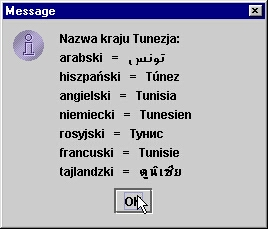
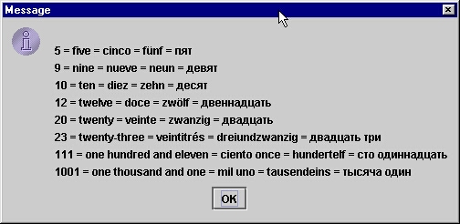
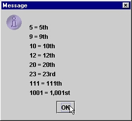
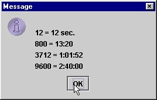
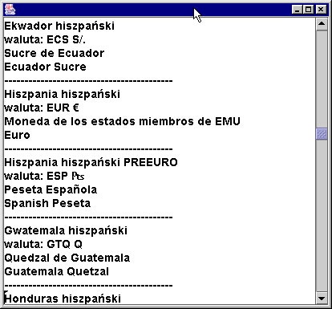
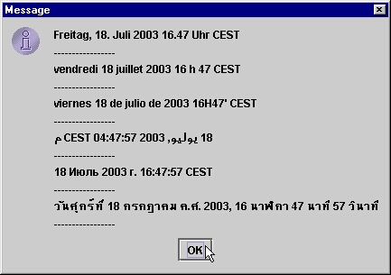
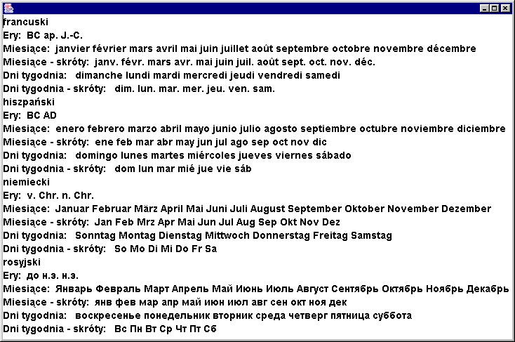
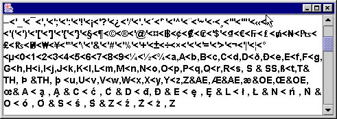

Internacjonalizacja aplikacji
Programy powinny prezentowaæ wartoœci liczb, dat, czasu w okreœlonych formatach,
Formaty te zale¿¹ od kraju lub regionu (jêzyka u¿ywanego w kraju/regionie
oraz innych kulturowo utrwalonych regu³). Krótko mówi¹c zale¿¹ od lokalizacji
. Równie¿ treœæ komunikatów wyœwietlanych przez program lub opisów
jakichœ
elementów GUI (a nawet ikon czy dŸwiêków u¿ywanych w programie) jest
zale¿na
od lokalizacji. Zatem - z jednej strony - programy powinny byæ
dostosowane
do konkretnych lokalizacji. Z drugiej strony czêsto powstaje
potrzeba przygotowania
programów w taki sposób, by - bez rekompilacji - mog³y dzia³aæ w
ró¿nych lokalizacjach.
Tym w³aœnie zagadnieniom - szczególnie istotnym w takich krajach jak
Polska
- poœwiêcony jest niniejszy rozdzia³. Równoczesnie warto
zaznaczyæ,
¿e tak¿e poza sfer¹ internacjonalizacji i bez specjalnego zajmowania
siê
ustawieniami ergionalnymi prezentowane tu narzêdzia stanowi¹ istotny
element
warstzatu programistycznego. Bez nich niemo¿liwe jest bowiem
odpowiednie
formatowanie liczb i operowanie na datach. We "Wprowadzeniu do
programowania (Java)" poznaliœmy sposoby wczytywania zlokalizowanych
liczb za pomoc¹ skanera i zlokalizowane formatowania liczb i dat za
pomoc¹ formatora. Tutaj przedstawione zostanie szerszyw achlarz œrodków
i narzêdzi lokalizacji i internacjonalizacji aplikacji.
1. Lokalizacje
W jêzyku angielskim okreslane jest to terminem
locale. Po polsku nie ma dobrego odpowiednika, u¿ywamy wiêc s³owa lokalizacja
zarówno w znaczeniu locale jak i dla okreœlenia sposobu oprogramowania aplikacji
w taki sposób, by dzia³a³a ona w³asciwie dla danych ustwieñ regionalnych
Specyficzne
dla danego jêzyka, regionu/kraju - regu³y, dotycz¹ce prezentacji ró¿nych
informacji (np.formatowania liczb i dat, pisowni tekstów, porz¹dku alfabetycznego)
nazwiemy lokalizacj¹.
Do rozwi¹zywania zagadnieñ lokalizacyjnych s³u¿y w Javie ca³y zestaw klas
(skupiony przede wszystkim w pakiecie java.text, ale nie tylko). Zestaw ten
zosta³ opracowany przez firmê Taligent, wchodz¹c¹ w sk³ad koncernu
IBM i wdro¿ony przez Sun w Javie w wersji 1.1, Bez wiêkszych zmian przetrwa³
on w kolejnych wersjach Javy do dziœ, natomiast zespó³ lokalizacyjny z Taligent
przekszta³ci³ siê w Unicode group w IBM Globalization Center of Competency
w Cupertino i zaj¹³ siê doskonaleniam i rozwijaniem swojego pierwotnego produktu
oraz przenoszeniem go do jêzyków C++ i C, a wszystko na zasadach "open source".
W efekcie powsta³a biblioteka o nazwie International Components for Unicode,
obejmuj¹cy poszerzone wersje klas lokalizacyjno-internacjonalizacyjnych,
a tak¿e pewne dodatkowe klasy, których w standardzie Javy brak. Biblioteka
wdra¿a najnowsze standardy Unicode (w tej chwili Unicode 4.0) i jest dostêpna
w wersjach dla jêzyków Java (ICU4J), C++ i C (ICU4C) na stronie http://www.icu-project.org/
Generalnie bêdziemy siê tu zajmowaæ standardowymi klasami Javy, gdzieniegdzie tylko przywo³uj¹c dodatki i rozszerzenia z ICU4J
W Javie lokalizacje reprezentowane s¹ przez obiekty klasy Locale z pakietu java.util.
Lokalizacja okreœlana jest przez kombinacjê:
- kodu jêzyka,
- kodu kraju,
- kodu wariantu.
Kody te - wartoœci typu String - podajemy przy tworzeniu obiektu klasy Locale
jako argumenty konstruktora tej klasy, przy czym mamy do dyspozycji trzy
przeci¹¿one konstruktory:
| Locale(String language) |
| Locale(String language,
String country) |
| Locale(String language,
String country,
String variant) |
Kod jêzyka - to kombinacja dwóch ma³ych liter, okreœlaj¹ca jêzyk wg standardu
ISO-639 (zob dostêpne kody : http://www.ics.uci.edu/pub/ietf/http/related/iso639.txt)
Kod kraju - to dwuliterowa kombinacja dwóch du¿ych liter, okreœlaj¹ca kraj
wg standardu ISO-3166 (http://www.chemie.fu-berlin.de/diverse/doc/ISO_3166.html)
Kod wariantu - jest dodatkow¹ informacj¹, któr¹ mo¿emy dodaæ i która nie
musi spe³niaæ ¿adnych standardów, wobec czego jest specyficzna w danycyh warunkach (np. pakietu lokalizacyjnego) lub dla danej
aplikacji.
Przyk³ady:
Locale a = new Locale("en", "GB"); // jêzyk angielski, kraj Wielka Brytania
Locale b = new Locale("en", "US"); // jêzyk angielski, kraj Stany Zjednoczone
Locale c = new Locale("en"); // jêzyk angielski, kraj nieokreœlony
Locale d = new Locale("pl", "PL", "Zakopane");
// Powy¿ej definiujemy wariant lokalizacyjny - "Zakopane"
// jêzyk jest polski, kraj - Polska
// ale dodatkowo nasza aplikacja mo¿e skorzystaæ ze zdefiniowanego wariantu
// jednak tylko nasze programy bêd¹ wiedzia³y co z takim wariantem nale¿y robiæ
// mo¿e np. wyœwietlaæ komunikaty w gwarze?
Uwaga: dla niektórych lokalizacji
w Javie s¹ okreœlone warianty. Np. tradycyjny Tajski, albo - w pakietach
ICU4J - dla krajów Europejskiej Unii Monetarnej warianty PREEURO (przed
wprowadzeniem euro).
Obiekt klasy Locale okreœla lokalizacjê (czyli wspomniane wczeœniej regu³y),
Zastosowanie tych regu³ - przy przetwarzaniu i formatowaniu informacji -
spoczywa na obiektach innych klas. Te klasy, które bior¹ pod uwagê wymagania
lokalizacyjne nazywaj¹ siê lokalizacyjnie-czu³ymi (locale-sensitive).
Nale¿¹ do nich:
|
Klasa
|
Przeznaczenie
|
NumberFormat (i pochodne)
|
Do formatowania i wczytywania liczb
|
Calendar (i pochodne)
|
Do operowania na datach i czasie
|
DateFormat (i pochodne)
|
Do formatowania i wczytywania dat i czasu
|
Collator
|
Do okreœlania porz¹dku alfabetycznego
|
BreakIterator
|
Do zlokalizowanego rozbioru tekstu
|
| Formatter | Do formatowania liczb i czasu (daty, czas) |
| Scanner | Do wczytywania liczb |
Ka¿dy program w Javie - przy uruchomieniu, na podstawie w³aœciwoœci ustalonych dla platformy systemowej - uzyskuje tzw. domyœln¹ lokalizacjê
. Mo¿emy siê dowiedzieæ jaka to jest lokalizacja za pomoc¹ odwo³ania Locale.getDefault()
i mo¿emy zmieniæ tê lokalizacjê u¿ywaj¹c metody Locale.setDefault(Locale).
Aby przetwarzaæ informacje w zlokalizowanej formie pos³ugujemy siê obiektami
klas lokalizacyjnie-czu³ych. Dla zastosowania domyœlnych regu³ lokalizacyjnych
uzyskujemy te obiekty za pomoc¹ statycznych metod get...Instance() bez argumentu, okreœlaj¹cego lokalizacjê. W przypadku klas Scanner i Formatter (gdzie nie ma metody getInstance) u¿ywamy konstruktorów lub metod (bez argumentu, okreœlaj¹cego lokalizacjê).
Np. kod na listingu pokazuje domyœln¹ lokalizacjê i zgodnie z t¹ lokalizacj¹
wypisuje bie¿¹c¹ datê oraz liczbê 1234567.1, przy czym w trakcie dzia³ania
zmienia domyœln¹ lokalizacjê i ponawia wyprowadzanie informacji.
import java.text.*;
import java.util.*;
public class DefLok {
static public void report() {
Locale defLoc = Locale.getDefault();
System.out.println("Domyœlna lokalizacja : " + defLoc);
DateFormat df = DateFormat.getDateInstance(DateFormat.LONG);
NumberFormat nf = NumberFormat.getInstance();
System.out.println(df.format(new Date()));
System.out.println(nf.format(1234567.1));
}
public static void main(String[] args) {
report();
Locale.setDefault(new Locale("en"));
report();
}
}
Wydruk programu:
Domyœlna lokalizacja : pl_PL
12 lipiec 2003
1_234_567,1
Domyœlna lokalizacja : en
July 12, 2003
1,234,567.1
Zwróæmy uwagê:
- formaty dat i liczb dla ró¿nych lokalizacji ró¿ni¹ siê,
- zmiana domyœlnej lokalizacji dotyczy wszystkich klas lokalizacyjnie-czu³ych.
Klasy lokalizacyjnie-czu³e pozwalaj¹ równie¿ na uzyskiwanie ich
obiektów
przetwarzaj¹cych informacje w sposób wymagany przez konkretn¹ (nie
domyœln¹)
lokalizacjê, W tym celu u¿ywamy statycznych metod get...Instance(...)
lub w przypadku klas Scanner i Formattor konstruktorów lub metod z argumentem
typu Locale - okreœlaj¹cym konkretn¹ lokalizacjê.
Np. poni¿szy program wyprowadz datê w lokalizacji domyœlnej, a liczbê - najpierw
w domyœlnej, a póŸniej zgodnej z jêzykiem angileskim.
import java.text.*;
import java.util.*;
public class MiscLok {
public static void main(String[] args) {
System.out.println("Domyœlna lokalizacja : " + Locale.getDefault());
DateFormat df = DateFormat.getDateInstance(DateFormat.LONG);
System.out.println(df.format(new Date()));
double num = 123.4;
NumberFormat nf = NumberFormat.getInstance();
System.out.println("Liczba " + num +
" w lokalizacji domyœlnej: " + nf.format(num));
nf = NumberFormat.getInstance(new Locale("en"));
System.out.println("Liczba " + num +
" w lokalizacji angielskiej: " + nf.format(num));
}
}
Domyœlna lokalizacja : pl_PL
12 lipiec 2003
Liczba 123.4 w lokalizacji domyœlnej: 123,4
Liczba 123.4 w lokalizacji angielskiej: 123.4
Uwaga: liczby ró¿ni¹ siê separatorem miejsc dziesiêtnych (przecinek dla Polski, kropka dla krajów anglojêzycznych).
Zatem mo¿emy - w trakcie dzia³ania programu - ustalaæ lokalizacje zarówno
ogólnie (dla wszystkich klas lokalizacyjnie-czu³ych), jak i dla ka¿dego konkretnego
obiektu tych klas.
Jednak nie wszystkie mo¿liwe lokalizacje (okreœlone w standardzie ISO) s¹
przez Javê podtrzymywane (nie dla wszystkich zdefiniowano regu³y formatowania liczb i czasu
czy te¿ traktowania tekstów).
Dostêpne z poziomu Javy lokalizacje mo¿na uzyskaæ za pomoc¹ metod Locale[] getAvailableLocales()
, zdefiniowanych w klasach Locale oraz wszystkich klasach lokalizacyjnie-czu³ych.
Metody te zwracaj¹ tablice dostêpnych lokalizacji. Generalnie, bêd¹ to te
same zestawy lokalizacji.
Poni¿szy program wypisuje wszystkie dostêpne lokalizacje.
import java.util.*;
import java.text.*;
public class Lokal1 {
public static void main(String[] args) {
// Tablica dostêpnych lokalizacji
Locale[] loc = Locale.getAvailableLocales();
System.out.println("Kod jêzyka" + "#" +
"Kod kraju" + "#" +
"Kod wariantu" + "#" +
"Jêzyk" + "#" +
"Kraj" + "#" + "Wariant"
);
for (int i=0; i<loc.length; i++) {
String countryCode = loc[i].getCountry(); // kod kraju
String langCode = loc[i].getLanguage(); // kod jêzyka
String varCode = loc[i].getVariant(); // wariant
// lokalizacja opisana w jêzyku domyœlnej lokalizacji (polskim)
String kraj = loc[i].getDisplayCountry();
String jezyk = loc[i].getDisplayLanguage();
String wariant = loc[i].getDisplayVariant();
System.out.println(langCode + "#" +
countryCode + "#" +
varCode + "#" +
jezyk + "#" + kraj + "#" + wariant);
}
}
}
Uwaga: warto w tym programie zwróciæ uwagê na u¿ycie ró¿nych metod wobec obiektów klasy Locale.
Wynik dzia³ania programy pokazuje tablica (bêd¹ca jednoczeœnie przewodnikeim po aktualnie dostêpnych w Javie lokalizacjach).
| Kod jêzyka | Kod kraju | Kod wariantu | Jêzyk | Kraj | Wariant |
| ar |
|
| arabski |
|
|
| ar | AE |
| arabski | Zjednoczone Emiraty Arabskie |
|
| ar | BH |
| arabski | Bahrajn |
|
| ar | DZ |
| arabski | Algeria |
|
| ar | EG |
| arabski | Egipt |
|
| ar | IQ |
| arabski | Irak |
|
| ar | JO |
| arabski | Jordan |
|
| ar | KW |
| arabski | Kuwejt |
|
| ar | LB |
| arabski | Liban |
|
| ar | LY |
| arabski | Libia |
|
| ar | MA |
| arabski | Maroko |
|
| ar | OM |
| arabski | Oman |
|
| ar | QA |
| arabski | Katar |
|
| ar | SA |
| arabski | Arabia Saudyjska |
|
| ar | SD |
| arabski | Sudan |
|
| ar | SY |
| arabski | Syria |
|
| ar | TN |
| arabski | Tunezja |
|
| ar | YE |
| arabski | Jemen |
|
| be |
|
| bia³oruski |
|
|
| be | BY |
| bia³oruski | Bia³oruœ |
|
| bg |
|
| bu³garski |
|
|
| bg | BG |
| bu³garski | Bu³garia |
|
| ca |
|
| kataloñski |
|
|
| ca | ES |
| kataloñski | Hiszpania |
|
| cs |
|
| czeski |
|
|
| cs | CZ |
| czeski | Republika Czeska |
|
| da |
|
| duñski |
|
|
| da | DK |
| duñski | Dania |
|
| de |
|
| niemiecki |
|
|
| de | AT |
| niemiecki | Austria |
|
| de | CH |
| niemiecki | Szwajcaria |
|
| de | DE |
| niemiecki | Niemcy |
|
| de | LU |
| niemiecki | Luksemburg |
|
| el |
|
| grecki |
|
|
| el | GR |
| grecki | Grecja |
|
| en | AU |
| angielski | Australia |
|
| en | CA |
| angielski | Kanada |
|
| en | GB |
| angielski | Wielka Brytania |
|
| en | IE |
| angielski | Irlandia |
|
| en | IN |
| angielski | Indie |
|
| en | NZ |
| angielski | Nowa Zelandia |
|
| en | ZA |
| angielski | Republika Po³udniowej Afryki |
|
| es |
|
| hiszpañski |
|
|
| es | AR |
| hiszpañski | Argentyna |
|
| es | BO |
| hiszpañski | Boliwia |
|
| es | CL |
| hiszpañski | Chile |
|
| es | CO |
| hiszpañski | Kolumbia |
|
| es | CR |
| hiszpañski | Kostaryka |
|
| es | DO |
| hiszpañski | Republika Dominikany |
|
| es | EC |
| hiszpañski | Ekwador |
|
| es | ES |
| hiszpañski | Hiszpania |
|
| es | GT |
| hiszpañski | Gwatemala |
|
| es | HN |
| hiszpañski | Honduras |
|
| es | MX |
| hiszpañski | Meksyk |
|
| es | NI |
| hiszpañski | Nikaragua |
|
| es | PA |
| hiszpañski | Panama |
|
| es | PE |
| hiszpañski | Peru |
|
| es | PR |
| hiszpañski | Portoryko |
|
| es | PY |
| hiszpañski | Paragwaj |
|
| es | SV |
| hiszpañski | Salwador |
|
| es | UY |
| hiszpañski | Urugwaj |
|
| es | VE |
| hiszpañski | Wenezuela |
|
| et |
|
| estoñski |
|
|
| et | EE |
| estoñski | Estonia |
|
| fi |
|
| fiñski |
|
|
| fi | FI |
| fiñski | Finlandia |
|
| fr |
|
| francuski |
|
|
| fr | BE |
| francuski | Belgia |
|
| fr | CA |
| francuski | Kanada |
|
| fr | CH |
| francuski | Szwajcaria |
|
| fr | FR |
| francuski | Francja |
|
| fr | LU |
| francuski | Luksemburg |
|
| hi | IN |
| hindi | Indie |
|
| hr |
|
| chorwacki |
|
|
| hr | HR |
| chorwacki | Chorwacja |
|
| hu |
|
| wêgierski |
|
|
| hu | HU |
| wêgierski | Wêgry |
|
| is |
|
| islandzki |
|
|
| is | IS |
| islandzki | Islandia |
|
| it |
|
| w³oski |
|
|
| it | CH |
| w³oski | Szwajcaria |
|
| it | IT |
| w³oski | W³ochy |
|
| iw |
|
| hebrajski |
|
|
| iw | IL |
| hebrajski | Izrael |
|
| ja |
|
| japoñski |
|
|
| ja | JP |
| japoñski | Japonia |
|
| ko |
|
| koreañski |
|
|
| ko | KR |
| koreañski | Korea Po³udniowa |
|
| lt |
|
| litewski |
|
|
| lt | LT |
| litewski | Litwa |
|
| lv |
|
| ³otewski |
|
|
| lv | LV |
| ³otewski | £otwa |
|
| mk |
|
| macedoñski |
|
|
| mk | MK |
| macedoñski | Macedonia |
|
| nl |
|
| holenderski |
|
|
| nl | BE |
| holenderski | Belgia |
|
| nl | NL |
| holenderski | Holandia |
|
| no |
|
| norweski |
|
|
| no | NO |
| norweski | Norwegia |
|
| no | NO | NY | norweski | Norwegia | Nynorsk |
| pl |
|
| polski |
|
|
| pl | PL |
| polski | Polska |
|
| pt |
|
| portugalski |
|
|
| pt | BR |
| portugalski | Brazylia |
|
| pt | PT |
| portugalski | Portugalia |
|
| ro |
|
| rumuñski |
|
|
| ro | RO |
| rumuñski | Rumunia |
|
| ru |
|
| rosyjski |
|
|
| ru | RU |
| rosyjski | Rosja |
|
| sh |
|
| serbo-chorwacki |
|
|
| sh | YU |
| serbo-chorwacki | Jugos³awia |
|
| sk |
|
| s³owacki |
|
|
| sk | SK |
| s³owacki | S³owacja |
|
| sl |
|
| s³oweñski |
|
|
| sl | SI |
| s³oweñski | S³owenia |
|
| sq |
|
| albañski |
|
|
| sq | AL |
| albañski | Albania |
|
| sr |
|
| serbski |
|
|
| sr | YU |
| serbski | Jugos³awia |
|
| sv |
|
| szwedzki |
|
|
| sv | SE |
| szwedzki | Szwecja |
|
| th |
|
| tajlandzki |
|
|
| th | TH |
| tajlandzki | Tajlandia |
|
| th | TH | TH | tajlandzki | Tajlandia | TH |
| tr |
|
| turecki |
|
|
| tr | TR |
| turecki | Turcja |
|
| uk |
|
| ukraiñski |
|
|
| uk | UA |
| ukraiñski | Ukraina |
|
| zh |
|
| chiñski |
|
|
| zh | CN |
| chiñski | Chiny |
|
| zh | HK |
| chiñski | Hong Kong |
|
| zh | TW |
| chiñski | Tajwan |
|
| en |
|
| angielski |
|
|
| en | US |
| angielski | Stany Zjednoczone Ameryki |
|
Uwaga: tabela pokazuje lokalizacje dostêpne w Javie. Przy
u¿yciu biblioteki ICU4J uzyskamy wiêkszy zestaw dostêpnych lokalizacji.
Nale¿y tu zaobserwowaæ nastêpuj¹ce cechy:
- mo¿emy formowaæ lokalizacje tylko na podstawie jêzyka,
- dodatkowa specyfikacja kraju mo¿e ró¿nicowaæ formaty jêzykowe zgodnie z tradycjami kulturowymi danego kraju,
- istniej¹ kraje z kilkoma obowi¹zuj¹cymi jêzykami,
- dla niektórych lokalizacji podano dodatkowe warianty.
Poni¿szy przyk³adowy program pokazuje wykorzystanbie prostej klasy Locale w celu t³umaczenia nazw krajów na ró¿ne jêzyki.
import java.util.*;
import java.text.*;
import javax.swing.*;
class CountryTranslator {
public static void main(String[] args) {
Locale[] loc = Locale.getAvailableLocales();
Map map = new HashMap();
String kraj;
// Dodanie dostêpnych lokalizacji do mapy
// klucz: nazwa kraju po poslku, wartoœc - lokealizacja
for (int i=0; i<loc.length; i++) {
String countryCode = loc[i].getCountry(); // kod kraju
if (countryCode.equals("")) continue;
kraj = loc[i].getDisplayCountry();
map.put(kraj, loc[i]);
}
String msg = "Podaj kraj";
String in = "";
while((kraj = JOptionPane.showInputDialog(msg)) != null ) {
// Pobieramy lokalizacjê dla podanego kraju
Locale savedLoc = (Locale) map.get(kraj);
if (savedLoc == null) continue;
msg = "Podaj kody jêzyków, rozdzielone spacjami";
while((in = JOptionPane.showInputDialog(null, msg, in)) != null ) {
StringTokenizer st = new StringTokenizer(in);
if (st.countTokens() == 0) continue;
String rep = "Nazwa kraju " + kraj + ":\n";
// Dla kolejnych kodów jêzyków
// uzyskujemy nazwê kraju w jêzyku odpowiadaj¹cym
// lokalizacji zwi¹zanej z kodem jêsyka
while(st.hasMoreTokens()) {
Locale lang = new Locale(st.nextToken());
rep += lang.getDisplayLanguage() + " = " +
savedLoc.getDisplayCountry(lang) + "\n";
}
JOptionPane.showMessageDialog(null,rep);
}
msg = "Podaj kraj";
}
System.exit(0);
}
}

W tym programie wykorzystaliœmy fakt, i¿ metody getDisplay... u¿yte bez argumentów
zwracaj¹ opisy w jêzyku lokalizacji domyœlnej (np. loc.getDisplayLanguage()
zwróci opis jêzyka po polsku), a u¿yte z argumentem-lokalizacj¹ zwracaj¹
opis w jêzyku podanej lokalizacji (np. loc1.getDisplayCountry(loc2) zwróci
nazwê kraju, zwi¹zanego z lokalizacj¹ loc1 w jêzyku lokalizacji loc2).
Przyk³adowy wynik dzia³ania programu pokazano na rysunku.
2. Formatowanie liczb
Gdy wyprowadzamy liczby rzeczywiste w postaci znakowej np. za pomoc¹ metody
System.out.println(...), to nie mamy wp³ywu na ich formatowanie (np. ile
jest pokazywanych miejsc dziesiêtnych). Np. wynikiem takiego fragmentu programu:
double d = 10/3.0;
System.out.println(d);
bêdzie:
3.3333333333333335
Bardzo czêsto bêdziemy potrzebowaæ "sformatowanego" wydruku liczby (np. z trzema miejscami dziesiêtnymi).
Oczywiœcie
mo¿emy zastosowac metodê printf, która korzysta z formatora (obiektu
klasy Formatter z pakietu java.util). To jest najwygodniejsze
rozwi¹zanie w prostych przypadkach.
Ale gdy w programie mamy
sekwencje wczytywania i wyprowadzania zlokalizowanych liczb
zastosowanie innych œrodków mo¿e okazaæ siê bardziej u¿yteczne.
Mianowicie, w pakiecie java.text znajdziemy klasy, które umo¿liwiaj¹ formatowanie liczb.
Aby w powy¿szym przyk³adzie uzyskaæ trzy miejsca dziesiêtne mo¿emy np. u¿yæ klasy NumberFormat:
NumberFormat nf = NumberFormat.getInstance();
nf.setMaximumFractionDigits(3);
String wynik = nf.format(d);
System.out.println(wynik);
Tutaj:
- statyczna metoda getInstance() zwraca obiekt formatuj¹cy - formator,
- za pomoc¹ metody setMaximumFractionDigits(..) ustalamy, ¿e ten formator
ma formatowaæ liczby w taki sposób, by maksymalna liczba cyfr dziesiêtnych
wynosi³a 3,
- po czym za pomoc¹ metody format uzyskujemy napis reprezeentuj¹cy liczbê
d, z maksymalnei trzema miejscami dziesiêtnymi i wypisujemy wynik, który
teraz bêdzie wygl¹da³ tak: 3,333
- podkreœlmy jeszcze raz (omawialiœmy
to w poprzednim punkcie), ¿e sposób formatowania liczb jest zale¿ny od lokalizacji;
zastosowana tu lokalizacja domyœlna (polska) u¿ywa jako separatora miejsc
dziesiêtnych przecinka.
Wygodniejszy i bardziej uniwersalny sposób formatowania liczb polega na specyfikowaniu
wzorców formatu. Mog¹ one byæ stosowane wobec formatorów, które s¹ obiektami
klasy DecimalFormat.
Klasa DecimalFormat jest podklas¹ klasy NumberFormat, a metoda getInstance()
z klasy NumberFormat tak naprawdê zwraca referencjê do obiektu tej w³aœnie
podklasy.
Mo¿emy post¹piæ tak:
- stworzyæ obiekt klasy DecimalFormat, podaj¹c jako argument konstruktora wzorzec formatowania,
- wywo³aæ metodê format na rzecz tego obiektu.
Na przyk³ad:
double d = 10/3.0;
DecimalFormat dform = new DecimalFormat("###.###");
String wynik = dform.format(d);
System.out.println(wynik);
Tutaj otrzymamy wynik: 3,333, bowiem zastosowany wzorzec formatowania mówi
o tym, ¿e napis reprezentuj¹cy liczbê ma zawieraæ cyfry na pozycjach calkowitych
(przy czym wiod¹ce zera nie bêd¹ pokazywane, a liczba cyfr bêdzie odpowiednia dla wyniku),
znak reprezentuj¹cy separator miejsc dziesiêtnych oraz co najwy¿ej trzy cyfry
na miejscach dziesiêtnych (przy czym nieznacz¹ce zera nie bêd¹ pokazywane,
a ostatnia pokazana cyfra bêdzie zaokr¹glona).
Wzorce formatowania s¹ ³añcuchami znakowymi i maj¹ nastêpuj¹c¹ postaæ:
[prefiks][czêœc_ca³kowita][.czêœæ_dziesiêtna][sufiks]
gdzie:
- prefiks i sufiks - dowolny ci¹g znaków oprócz znaków specjalnych,
- czêœæ ca³kowita i czêœæ dziesiêtna - zero lub wiêcej znaków specjalnych
'#' albo zero lub wiêcej znaków specjalnych '0' oraz ew. pojedyncze inne
znaki specjalne.
Uwagi:
- nawiasy kwadratowe oznaczaj¹ opcjonalnoœæ elememetu wzorca, z tym, ¿e co najmniej jeden z elementów musi wyst¹piæ;
- jako wzorzec formatuj¹cy mo¿na podac dwa wzorce w powy¿szej postaci,
rozdzielone œrednikiem; pierwszy z nich bêdzie dotyczy³ liczb dodatnich,
drugi - ujemnych.
Najwa¿niejsze znaki specjalne u¿ywane we wzorcach formatuj¹cych podaje tabela.
| Symbol | Opis |
|---|
| 0 | cyfra, jeœli jest nieznacz¹cym zerem pokazywana jako 0 |
| # | cyfra, nieznacz¹ce zera nie s¹ pokazywane |
| . | miejsce separatora dziesiêtnego |
| , | miejsce separatora grup cyfr (np. tysiêcy) |
| E | miejsce separatora dla notacji in¿ynieryjnej lub naukowej ( np. 1E-11) |
| ; | separator formatu dla liczb dodatnich i formatu dla liczb ujemnych
<
/td> |
| - | znak minus |
| % | powoduje mno¿enie liczby przez 100 i pokazanie jej w postaci procentowej
|
| ¤ | symbol waluty (np. z³); u¿yty dwukrotnie daje miêdzynarodowy symbol waluty |
| ' | ujête w apostrofy znaki specjalne mog¹ byæ pokazywane w czêœci prefiks lub sufiks
|
Program na wydruku pokazuje jak mo¿na korzystaæ z ró¿nych formatów.
import java.text.*;
import java.math.*;
public class Format1 {
public static void show(double n1, Double n2, BigDecimal n3,
String format) {
DecimalFormat df = new DecimalFormat(format);
System.out.println("Format " + format);
System.out.println("Liczba: " + n1 + " wygl¹da tak: " + df.format(n1));
System.out.println("Liczba: " + n2 + " wygl¹da tak: " + df.format(n2));
System.out.println("Liczba: " + n3 + " wygl¹da tak: " + df.format(n3));
}
public static void main(String[] args) {
double num1 = 1.346;
Double num2 = new Double(0.765474);
BigDecimal num3 = new BigDecimal("100.2189091");
show(num1, num2, num3, "#.##");
show(num1, num2, num3, "#.## %");
show(num1, num2, num3, "#.0000");
show(num1, num2, num3, "#.00 ¤");
show(num1, num2, num3, "#.00 ¤¤");
show(num1, num2, num3, "[ 000.0 ]");
}
}
Wyniki jego dzialania pokazuje wydruk.
Format #.##
Liczba: 1.346 wygl¹da tak: 1,35
Liczba: 0.765474 wygl¹da tak: 0,77
Liczba: 100.2189091 wygl¹da tak: 100,22
Format #.## %
Liczba: 1.346 wygl¹da tak: 134,6 %
Liczba: 0.765474 wygl¹da tak: 76,55 %
Liczba: 100.2189091 wygl¹da tak: 10021,89 %
Format #.0000
Liczba: 1.346 wygl¹da tak: 1,3460
Liczba: 0.765474 wygl¹da tak: ,7655
Liczba: 100.2189091 wygl¹da tak: 100,2189
Format #.00 ¤
Liczba: 1.346 wygl¹da tak: 1,35 z³
Liczba: 0.765474 wygl¹da tak: ,77 z³
Liczba: 100.2189091 wygl¹da tak: 100,22 z³
Format #.00 ¤¤
Liczba: 1.346 wygl¹da tak: 1,35 PLN
Liczba: 0.765474 wygl¹da tak: ,77 PLN
Liczba: 100.2189091 wygl¹da tak: 100,22 PLN
Format [ 000.0 ]
Liczba: 1.346 wygl¹da tak: [ 001,3 ]
Liczba: 0.765474 wygl¹da tak: [ 000,8 ]
Liczba: 100.2189091 wygl¹da tak: [ 100,2 ]
Zwrócmy uwagê, ¿e za pomoc¹ metody format(...) mo¿na formatowac nie
tylko liczby typu double, ale równie¿ typu long oraz obiekty klas pochodnych
od Number (np. Double, Float, Long, Integer) i BigInteger oraz BigDecimal.
Klasy formatuj¹ce liczby
s¹ przygotowane na prezentacjê liczb wed³ug regu³ lokalizacyjnych. Jeœli
w metodzie getInstance() nie podamy lokalizacji - bêdzie u¿yta lokalizacja domyœlna, w naszym przypadku
polska, wedle której separatorem miejsc dziesiêtnych jest przecinek.
Jak uzyskaæ kropkê zamiast przecinka? Mo¿emy zmieniæ lokalizacjê na tak¹,
w której seperatorem jest kropka (np. angielsk¹) np. tak:
DecimalFormat df = (DecimalFormat)
NumberFormat.getInstance(new Locale("en", "US"));
df.applyPattern(format);
Ale wtedy utracimy polskie symbole waluty, zamiast nich pojawi¹ siê dla
Stanów Zjednoczonych USD, dla innych anglojêzycznych krajów inne symbole,
a jeœli nie podamy kraju - XXX (nieznana waluta).
Mo¿emy co prawda ustaliæ walutê za pomoc¹ metody setCurrency(...), u¿ytej wobec formatora, ale wykorzystajmy raczej to, ¿e
- z ka¿d¹ lokalizacj¹ zwi¹zany jest zestaw symboli
u¿ywanych przy formatowaniu liczb (jest to obiekt klasy DecimalFormatSymbols),
- mo¿emy go ³atwo uzyskaæ od formatora dla domyœlnej lokalizacji (metoda
getDecimalFormatSymbols())
- i zmieniæ wybrany symbol (za pomoca odpowiedniej
metody klasy DecimalFormatSymbols).
Zmiana separatora miejsc dziesiêtnych na kropkê mo¿e wygl¹daæ tak:
DecimalFormat df = new DecimalFormat(format); // formator w domyœlnej lokalizacji
DecimalFormatSymbols sym = df.getDecimalFormatSymbols(); // symbole
sym.setDecimalSeparator('.'); // ustalenie separatora miejsc dziesiêtnych
Teraz nasz program wyprowadzi np. zamiast 1,35 z³ napis 1.35 z³.
Inne symbole u¿ywane przy formatowaniu i metody ich zmian opisane s¹ w dokumentacji.
Zwykle jednak bêdziemy chcieli wypisywaæ liczby w takiej postaci, w jakiej
przyjêto dla danej lokalizacji i tutaj rola formatorów jest nieoceniona,
³atwo bowiem ustaliæ potrzebn¹ lokalizacjê (oprócz wspomnianych wczeœniej
sposobów mo¿na te¿ stworzyæ obiekt klasy DecimalFormatSymbols dla lokalizacji
okreœlanej przez argument konstruktora tej klasy i u¿yæ tego obiektu przy
tworzeniu formatora DecimalFormat - konstruktor DecimalFormat(String format,
DecimalFormatSymbols symbole)).
Zwróæmy uwagê, ¿e metoda getInstance(...) klasy NumberFormat jest metod¹
fabryczn¹ - zwraca obiekt okreœlonej podklasy klasy NumberFormat. Obecnie
jest to obiekt klasy DecimalFormat, ale - jak napisano w dokumentacji -
to niekoniecznie musi byæ zagwarantowane w przysz³oœci, tak ¿e dla wiêkszej
przenoœnoœci kody nale¿a³a³oby przed formatowaniem dziesiêtnym sprawdzaæ
czy zwrócony przez getInstance() obui\iekt jest obiektem klasy DecimalFormat.
Mo¿emy te¿ uzyskaæ specjalne formatory (bêd¹ce teraz równie¿ obiektami klasy
DecimalFormat, ale o specjalnych w³aœciwoœciach) do formatowania:
- liczb ca³kowitych - metoda NumberFormat.getIntegerInstance(...)
- wartoœci wyra¿onych w walucie - metoda NumberFormat.getCurrencyInstance(...)
- wartoœci w procentach - metoda NumberFormat.getPercentInstance(...)
Te swoiste warianty s¹ jak gdyby prostsz¹ drog¹ uzyskiwania efektów podobnych
do u¿ycia wzorców formatowania, o ile zale¿y nam tylko na tych w³aœnie (ca³kowitych,
walutowych, procentowych) formatach.
Oczywiœcie, wszystkie te metody maj¹ wersje z argumentem okreslaj¹cym lokalizacjê.
Formatory potrafi¹ tak¿e dokonywaæ przekszta³ceñ odwrotnych: zamieniaæ napisy
reprezentuj¹ce liczby na postaæ binarn¹ tych liczb. Istotnie, jeœli mam jakiœ
tekst, w którym liczby podawane s¹ z przecinkami jako separatorami miejsc
dziesiêtnych, to metoda parseDouble z klasy Double nie da oczekiwanych wyników.
Zamiast niej mo¿emy zastosowaæ metodê parse(..) zdefiniowan¹ w klasach formatorów
i metoda ta poradzi sobie z dowolnymi sposobami zapisu liczb wedle ró¿nych
regu³ lokalizacyjnych (a tak¿e wedle ró¿nych formatów).
Uwaga: proste parsowanie napisów jako liczb uzyskamy za pomoc¹ klasy Scanner.
Do zamiany napisów reprezentuj¹cych liczby w danym formacie na ich binarn¹
postaæ mo¿na zastosowaæ metodê parse(String) u¿yt¹ na rzecz formatora.
Przy tym:
- metoda parse(...) zwraca referencjê do obiektu podklasy klasy Number,
który - w zale¿noœci od wartoœci interpretowanego napisu mo¿e wskazywaæ na
Long lub Double,
- napis podlega interpretacji jako liczba zgodnie z lokalizacj¹ (np.
w polskiej lokalizacji u¿ycie przecinka jako sepratora miejsc dziesiêtnych),
- je¿eli formator nie dotyczy walut, procentów i nie uzyskano go wg
wzorca formatowania, który zawiera inne od specjalnych znaki, to przekszta³canie
napisu na liczbê bêdzie dokonywane dopóki mo¿na, tzn. dopóki kolejny znak
bêdzie stanowi³ (w danej lokalizacji) czêœæ liczby, pozosta³e znaki zostan¹
pominiête i nie wyst¹pi ¿aden wyj¹tek,
- dla prostego, ogólnego formatu liczbowego wyj¹tek wyst¹pi
tylko wtedy, gdy pocz¹tek napisu nie da siê zinterpretowaæ jako liczba (wyj¹tek
klasy ParseException)
- przy interpretacji napisów wg specyficznych formatów (np. walutowego
lub wg rozbudowanych wzorców formatowania) napis musi byæ zgodny z formatem
i niezaleznie od tego czy niezgodnoœæ wyst¹pi na pocz¹tku czy na koñcu -
powstanie wyj¹tek ParseException.
Program na listingu pokazuje prosty przyk³ad u¿ycia metody parse(...).
import javax.swing.*;
import java.text.*;
public class Parse1 {
public static void main(String[] args) {
NumberFormat format = NumberFormat.getInstance();
String in,
msg = "Podaj liczbê";
Number num = null;
while ((in = JOptionPane.showInputDialog(msg)) != null) {
System.out.println("Wejœcie: " + in);
try {
num = format.parse(in);
} catch (ParseException exc) {
System.out.println("Wadliwe dane: " + in);
System.out.println(exc);
continue;
}
System.out.println("Parse daje: " +
num.getClass().getName()+ " = " + num);
}
System.exit(0);
}
}
Na wydruku przedstawiono efekty dzia³ania programu dla ró¿nych danych wejœciowych:
Wejœcie: 1
Parse daje: java.lang.Long = 1
Wejœcie: 1.111
Parse daje: java.lang.Long = 1
Wejœcie: 1,111
Parse daje: java.lang.Double = 1.111
Wejœcie: 1e16
Parse daje: java.lang.Long = 1
Wejœcie: 99999999999999999999999999999999999
Parse daje: java.lang.Double = 1.0E35
Wejœcie: -1,213
Parse daje: java.lang.Double = -1.213
Wejœcie: 212a
Parse daje: java.lang.Long = 212
Wejœcie: aaaa
Wadliwe dane: aaaa
java.text.ParseException: Unparseable number: "aaaa"
Gdybyœmy w tym programie zamienili format na:
NumberFormat format = NumberFormat.getCurrencyInstance();
to:
wprowadzenie napisu 23 - da³oby wyj¹tek ParseException
wprowadzenie napisu 23 PLN - da³oby wyj¹tek ParseException
wprowadzenie napisu 23z³ - da³oby wyj¹tek ParseException
i tylko po wprowadzeniu w³aœciwiego domyœlnego formatu walutowego:
23 z³
uzyskalibyœmy liczbê 23.
Jeœli natomiast u¿ylibyœmy wzorca formatowania:
NumberFormat format = new DecimalFormat("[ #.0000 ]");
to akceptowane by³yby wy³¹cznie napisy, reprezentuj¹ce poprawne liczby ujête w nawiasy kwadartowe (z okalaj¹cymi spacjami).
W tych przypadkach, gdy b³¹d mo¿e pojawiæ siê nie tylko na samym pocz¹tku
napisu, u¿yteczna mo¿e okazaæ siê metoda getErrorOffset() z klasy ParseException,
która zwraca pozycjê w napisie, na której pojawi³ siê b³¹d.
Zobaczmy na przyk³adzie zmodyfikowanego programu:
public static void main(String[] args) {
NumberFormat format = new DecimalFormat("[ #.0000 ]");
//...
while ((in = JOptionPane.showInputDialog(msg)) != null) {
System.out.println("Wejscie: " + in);
try {
num = format.parse(in);
} catch (ParseException exc) {
System.out.println("Wadliwe dane: " + in);
System.out.println(exc);
System.out.println("Wadliwa pozycja: " + exc.getErrorOffset());
continue;
}
System.out.println("Parse daje: " +
num.getClass().getName()+ " = " + num);
}
}
Przyk³adowy wydruk zmodyfikowanego programu :
Wejscie: [23]
Wadliwe dane [23]
java.text.ParseException: Unparseable number: "[23]"
Wadliwa pozycja: 0
Wejscie: [ 23 ]
Parse daje: java.lang.Long = 23
Wejscie: [ 23
Wadliwe dane: [ 23
java.text.ParseException: Unparseable number: "[ 23 "
Wadliwa pozycja: 4
Wejscie: [ 23 a ]
Wadliwe dane: [ 23 a ]
java.text.ParseException: Unparseable number: "[ 23 a ]"
Wadliwa pozycja: 4
Wejscie: [ 23.000 ]
Wadliwe dane: [ 23.000 ]
java.text.ParseException: Unparseable number: "[ 23.000 ]"
Wadliwa pozycja: 4
Wejscie: [ 23, 00 ]
Wadliwe dane: [ 23, 00 ]
java.text.ParseException: Unparseable number: "[ 23, 00 ]"
Wadliwa pozycja: 5
Wejscie: [ 23,0 ]
Parse daje: java.lang.Long = 23
Inn¹ form¹ metody parse z klas formatorów jest:
Number num = parse(String dane, ParsePosition pos);
Tutaj u¿ywamy obiektu pos klasy ParsePosition, który okreœla bie¿¹c¹ pozycjê rozbioru napisu dane oraz ew. pozycjê (indeks) na której wyst¹pi³ b³¹d.
Rozbiór danych (wedle formatu) rozpoczyna siê od pozycji okreslonej przez
podany obiekt klasy ParsePosition. Napis podlega interpretacji (dopóki kolejne
jego znaki mo¿na traktowaæ jako znaki liczby wg danego formatu), po czym
bie¿¹ca pozycja rozbioru (indeks) jest ustawiana za ostatnim zinterpretowanym
znakiem i zwracana jest liczba jako obiekt klasy Number.
Ta metoda nie zg³asza ¿adnych wyj¹tków. W przypadku b³êdu interpretacji (a
w zale¿noœci od formatu - wystêpuje on albo tylko na pocz¹tku napisu, albo
gdzieœ dalej) zwracana jest wartoœæ null, bie¿¹ca pozycja nie ulega zmianie,
a indeks b³êdu ustawiany jest na znaku, który spowodow³¹ b³ad. Je¿eli nie
ma b³êdu indeks b³êdu ma wartoœæ -1.
Pozycje (indeks) - bie¿¹cy i b³êdu - mo¿emy uzyskiwac od obiektu ParsePosition
za pomoc¹ metod getIndex() i getErrorIndex() oraz ustawiaæ za pomoc¹ odpowiednich
metod setIndex(...) i setErrorIndex(...).
Program na wydruku pokazuje przyk³adowe u¿ycie tej metody parse do wyodrêbnienia
z pliku tekstowego wszystkich informacji zapisanych w formacie walutowym
(mo¿emy sobie wyobra¿aæ, ¿e jest to plik opisuj¹cy jakieœ wydatki, a naszym
zadaniem jest ich podsumowanie)
.import java.io.*;
import java.text.*;
import java.util.*;
public class Parse2 {
public static void main(String[] args) {
// Format walutowy w domyœlnej lokalizacji
// czyli w PL np. 12 z³
NumberFormat format = NumberFormat.getCurrencyInstance();
// Lista wartoœci wydatków (zapisanych w tekœcie pliku)
List numList = new ArrayList();
try {
BufferedReader br = new BufferedReader(
new FileReader("testdata.txt")
);
// czytanie kolejnych wierszu
String in;
while ((in = br.readLine()) != null) {
int p = 0; // bie¿¹cy indeks rozbioru
int last = in.length() - 1; // ostatni indeks w wierszu
// Utworzenie pozycji rozbioru wiersza (od 0)
ParsePosition ppos = new ParsePosition(0);
// Dopóki nie dobiegliœmy do koñca wiersza
while (p <= last) {
// Próbujemy pobraæ kolejn¹ liczbê w formacie walutowym
Number num = format.parse(in, ppos);
if (num == null) // je¿eli b³¹d,
p = ppos.getErrorIndex()+1; // indeks na znaku po b³êdzie
else { // je¿eli uda³o siê sczytaæ wartoœæ
numList.add(num); // dodajemy j¹ do listy
p = ppos.getIndex(); // indeks na nastêpnym znaku po
}
ppos.setIndex(p); // ustawiamy nastêpn¹ pozycjê
} // od której kontynuacja rozbioru
}
br.close();
} catch(Exception exc) {
exc.printStackTrace();
System.exit(1);
}
// Wypisanie i podsumowanie zapisanych w pliku wydatków
System.out.println("Wydatki w z³:");
double suma = 0;
for (Iterator iter = numList.iterator(); iter.hasNext(); ) {
Number val = (Number) iter.next();
System.out.println(val);
suma += val.doubleValue();
}
System.out.println("Wydano w sumie: " + format.format(suma));
}
}
Gdy u¿yjemy tego programu wobec pliku, zawieraj¹cego nastêpuj¹cy tekst:
Wydano najpierw 123 z³ na 23 kilo jab³ek
Kolejny wydatek obj¹³ 77,77 z³ (70 litrów maœlanki)
a potem jeszcze dosz³o 999,99 z³ w 4 ratach.
to w wyniku uzyskamy:
Wydatki w z³:
123
77.77
999.99
Wydano w sumie: 1 200,76 z³
Zwrócmy uwagê: tylko liczby zapisane w formacie walutowym zosta³y wyodrêbnione, inne liczby nie by³y brane pod uwagê.
Przyk³ad ten pokazuje du¿¹ si³e klas formatorów. Ten program zadzia³a bez rekompilacji przy ka¿dej innej domyœlnej lokalizacji
i dla plików, w których dane zapisano w innej (w³aœciwiej dla tej lokalizacji)
walucie.
Nieco brzydkie formatowanie wyniku w powy¿szym przyk³adzie mo¿na oczywiœcie
poprawiæ i to w doœæ prosty sposób. Oto przy formatowaniu liczb mamy swoisty
odpowiednik klasy ParsePosition. Tym razem jest to klasa FieldPosition
, która umo¿liwia uzyskiwanie informacji o pocz¹tku i koñcu pól sformatowanego
wyniku. W przypadku prostych liczb pola oznaczaj¹ czêœæ ca³kowit¹ i czêœæ
dziesiêtn¹, co jest identyfikowane przez sta³e statyczne z klasy NaumberFormat
o nazwach INTEGER_FIELD i FRACTIONAL_FIELD. U¿ycie FieldPosition w specjalnej
wersji metody format pozwala na dodatkowe formatowanie wyniku.
Zatem, aby mieæ dodatkow¹ kontrolê nad formatowaniem:
- tworzymy obiekt klasy FieldPosition, podaj¹c w konstruktorze o jaki rodzaj pola chodzi,
- po czym przekazujemy go jako ostatni argument specjalnej wersji metody
format, która ma te¿ jako argumenty liczbê do sformatowania i StringBuffer
do którego do³¹czany jest wynik formatowania,
- i po u¿yciu metody format(...) mo¿emy dowiedzieæ siê od obiektu FieldPosition
gdzie (na której pozycji) w buforze wynikowym zaczyna siê dane pole (metoda
getBeginIndex()) i gdzie siê koñczy (metoda getEndIndex()).
Pokazuje to poni¿szy program, który stanowi modyfikacjê poprzedniego przyk³adu
dokonan¹ z myœl¹ o wyrównywaniu wyprowadzanych wyników "na" separatorze miejsc
dziesiêtnych.
public class ParseAndFormat {
public static void main(String[] args) {
// ... tutaj czêœæ analogiczna jak w poprzednim pzryk³adzie
// ... czytanie danych z pliku i parsowanie liczb wg formatu walutowego
// ... dla przejrzystoœci format ten (uzyskiwany z getCurrencyInstance())
// ... nazwano cform (nazwa zmiennej)
// Wypisanie i podsumowanie przeczytanych z pliku wydatków
// formatowanie wyjœcia za pomoc¹ metody align (zob. dalej)
// w której u¿ywamy FieldPosition
// Format wyjœciowy - walutowy, z dwoma miejscami dziesiêtnymi
DecimalFormat outform = new DecimalFormat("#.00 ¤");
System.out.println("Wydatki w : " +
cform.getCurrency().getSymbol()); // symbol waluty
double suma = 0;
int i = 1;
final int DOTPOS = 30; // pozycja separatora miejsc dziesiêtnych
for (Iterator iter = numList.iterator(); iter.hasNext(); i++ ) {
Number val = (Number) iter.next();
suma += val.doubleValue();
System.out.println(
align("Pozycja " + i, outform, val, DOTPOS)
);
}
System.out.println(
align("Wydano w sumie", outform, new Double(suma), DOTPOS)
);
}
// Metoda wyrównuj¹ca liczby na separatorze miejsc dziesiêtnuych
// Liczba v formatowana zgodnie z formatem f
// poprzedzona jest napisem msg
// i tak¹ liczb¹ kropek, by separatory miejsc dziesiêtnych
// by³y wyrównane na pozycji width
static StringBuffer align(String msg, Format f, Number v, int width) {
//Interesuje nas pole - czêœæ ca³kowita liczby
FieldPosition fp = new FieldPosition(NumberFormat.INTEGER_FIELD);
// Bufor do którego zapisywana jest sformatowana liczba
// na pocz¹tku bufora ju¿ zapisujemy msg (opis pozycji wydatków)
StringBuffer out = new StringBuffer(msg);
int msgLen = out.length();
// formatowanie: v = liczba, out - bufor wynikowy, fp - opis pola
f.format(v, out, fp);
// Po sformatowaniu metoda fp.getEndIndex() zwraca
// pozycjê koñca pola = czêœci ca³kowitej liczby
// ³atwo obliczyæ liczbê dodatkowych (dotNum) "wype³niaczy",
// potrzebnych, by separator dziesiêtny znalaz³ siê na pozycji width
int dotNum = width - fp.getEndIndex();
// Wstawiamy do bufora - jako wype³niacze - kropki
while (dotNum-- > 0) {
out.insert(msgLen, '.');
}
return out;
}
}
Teraz wyniki przetwarzania naszego pliku tekstowego bêd¹ wygl¹dac nastêpuj¹co:
Wydatki w : z³
Pozycja 1..................123,00 z³
Pozycja 2...................77,77 z³
Pozycja 3..................999,99 z³
Wydano w sumie............1200,76 z³
Uwaga: program nie jest uniwesralny, gdy¿ pozycja "równania" na separatorze
miejsc dzisiêtnych jest niezale¿na od d³ugoœci poprzedzaj¹cego liczbê napisu
msg. Ogólnie, trzeba by najpierw okreœliæ maksymaln¹ d³ugoœæ napisów wyprowadzanych
przed kolejnymi liczbami i dosyosowaæ do tego wielkoœæ width. Pominêliœmy
jednak ten etap, aby nie zaciemniaæ ogólnego mechanimzu u¿ucia FieldPosition.
Istniej¹ te¿ inne sposoby formatowania liczb.
Wœród podklas klasy NumberFormat znajdziemy klasê ChoiceFormat.
Generalnie pozwala ona kojarzyæ dowolne napisy z (pó³otwartymi z prawej
strony) przedzia³ami liczb. Formatowanie za jej pomoc¹ polega na zast¹pieniu
liczby, "trafiaj¹cej" w dany przedzia³u, skojarzonym z tym przedzia³em napisem.
Jedna z wersji konstruktorów klasy ChoiceFormat przyjmuje jako argumenty:
- tablicê liczb typu double, okreœlaj¹ca pólotwarte (z prawej strony) przedzia³y liczbowe,
- tablicê napisów, kojarzonych z przedzia³ami.
Rozmiary obu tablic musz¹ byæ równe.
Liczby w tablicy musz¹ byæ uporz¹dkowane w kolejnoœci rosn¹cej.
Regu³y dzia³ania na zdefiniowanych przedzia³ach i kojarzeania liczb trafiaj¹cych
w dany przedzia³ z napisami mo¿na opisaæ w nastêpuj¹cy sposób.
Je¿eli:
double[] val = ( .... }; // przedzia³y liczbowe
String[] msg = { ... }; // napisy
ChoiceFormat cf = new ChoiceFormat(val, msg);
double x = ...;
String out = cg.format(x);
to:
gdy val[0] < x, to out = msg[0],
gdy val[0] <= x < val[1], to out == msg[0],
gdy val[1] <= x < val[2], to out == msg[1].
gdy val[2] <= x < val[3], to out == msg[2].
...
gdy val[val.length-2] <= x < val[val.length-1], to out == msg[msg.length-2]
gdy val[val.length-1] <= x , to out = msg[msg.length-1]
Pokazuje to poni¿szy program:
import java.text.*;
public class ChoiceForm {
public static void main(String[] args) {
double[] vals = { -1, 0, 1, 10 };
String[] msg = { "x mniejsze od zera",
"0 <= x < 1",
"1 <= x < 10",
"x >= 10"
};
ChoiceFormat cf = new ChoiceFormat(vals, msg);
String in;
while ((in = JOptionPane.showInputDialog("Podaj x")) != null) {
double x = Double.parseDouble(in);
String out = cf.format(x);
System.out.println(x + " : " + out);
}
}
}
który mo¿e (w zale¿noœci od podawancyh liczb) wyprowadziæ np. taki wynik:
11.0 : x >= 10
10.0 : x >= 10
9.99999 : 1 <= x < 10
0.0 : 0 <= x < 1
1.0 : 1 <= x < 10
2.0 : 1 <= x < 10
-0.5 : x mniejsze od zera
-10000.0 : x mniejsze od zera
Korzystaj¹c z klasy ChoiceFormat czasem wygodnie bêdzie pos³u¿yæ siê wzorcem formatowania.
Wzorzec definiujemy w postaci ³añcucha znakowego (String):
liczba sep napis | liczba sep napis | liczba sep napis ....
gdzie kolejne, rozdzielone znakiem | fragmenty okreœlaj¹ kojarzone przedzia³ów
i napisów, a jako separatora (sep) mo¿emy u¿yæ znaków # lub <.
Wzorzec podajemy jako argument konstruktora klasy ChoiceFormat.
Wyjaœnia to przyk³adowy program.
import javax.swing.*;
import java.text.*;
public class ChoiceForm2 {
public static void main(String[] args) {
String pattern =
"0#brak jablek |0<niecala polowa jablka |"+
"0.5#rowno pol jablka | 0.5<ponad polowa jablka |" +
"1#jedno jablko |1<niecale dwa jablka |" +
"2#dwa jablka |2<wiecej ni¿ dwa jablka";
ChoiceFormat cf = new ChoiceFormat(pattern);
String in;
while ((in = JOptionPane.showInputDialog("Ile jest jab³ek?")) != null) {
double x = Double.parseDouble(in);
String out = cf.format(x);
System.out.println("Podano: " + x + " Wynik: " + out);
}
}
}
a jego mo¿liwy wynik wyhl¹da nastêpuj¹co:
Podano: 0.0 Wynik: brak jablek
Podano: 0.1 Wynik: niecala polowa jablka
Podano: 0.5 Wynik: rowno pol jablka
Podano: 0.6 Wynik: ponad polowa jablka
Podano: 1.0 Wynik: jedno jablko
Podano: 1.7 Wynik: niecale dwa jablka
Podano: 2.0 Wynik: dwa jablka
Podano: 2.1 Wynik: wiecej ni¿ dwa jablka
Podano: 3.0 Wynik: wiecej ni¿ dwa jablka
Podano: -1.0 Wynik: brak jablek
Klasa ChoiceFormat jest szczególnie u¿yteczna przy internacjonalizacji napisów
w programie z wykorzystaniem kalsy MessageFormat - o czym bêdziemy mówiæ
dalej.
Uwaga: aby korzystaæ z klas pakietów ICU nale¿y udostêpniæ archiwum
JAR z tymi pakietami. Mo¿emy to uczyniæ na kilka sposobów:
- umieœciæ archiwum w katalogu javax katalogu instalacyjnego Javy (wtedy
biblioteka ICU stanie siê standardowym rozszerzeniem - inaczej zwanym pakietem
opcjonalnym - i nasze progarmy bêd¹ mia³y do niej dostêp,
- umieœciæ nazwê archiwum JAR biblioteki ICU na œcie¿ce classpath,
- kompilowaæ i uruchamiaæ programy z opcj¹ -classpath, podaj¹c archiwum
JAR biblioteki ICU wraz z innymi elmentami œcie¿ki (%classpath%); przy uruchamianiu
klas z pakietu domyœlnego nie nale¿y zapomnieæ o podaniu jako elementu œcie¿ki
bie¿¹cego katalogu, oznaczanego kropk¹,
Pozwala ona na formatowanie liczb za pomoc¹ definiowania zestawów regu³.
Przyk³adowe zdefiniowane ju¿ regu³y dla formatora RuleBasedNumber to:
- SPELLOUT - przedstawianie liczb w postaci s³ownej,
- ORDINAL - przedstawianie liczb jako liczebników porz¹dkowych (z odpowiednimi koñcówkami),
- DURATION - przekszta³canie liczb na jednostki czasu (godziny, minuty, sekundy).
Te regu³y s¹ ju¿ gotowe dla niektórych lokalizacji, nic nie stoi te¿ na przeszkodzie,
by tworzyæ w³asne regu³y (np. dla innych lokalizacji lub ca³kiem innego rodzaju).
Opis sposobów definiowania regu³ zawarty jest w dokumentacji ICU4J, tu przyjrzymy
siê tylko przyk³adowym zastosowaniom gotowych regu³.
Poni¿szy program pokazuje najpierw s³owny opis liczb w ró¿nych lokalizacjach
(niestety formator SPELLOUT nie jest spolszczony), po czym liczby porz¹dkowe
oraz czas (ale tylko po angielsku, bo formatory ORDINAL i DURATION nie s¹
zlokalizowane dla wiêkszoœci innych jezyków).
import com.ibm.icu.text.*; // podpakiet ICU - dla RuleBasedNumberFormat
import java.util.*; // Locale
import javax.swing.*; // JOptionPane
class RuleBasedNumberFormatTest {
public static void main(String[] args) {
// Lokalizacje
Locale[] loc = { new Locale("en"),
new Locale("es"),
new Locale("de"),
new Locale("ru"),
};
// Tablica formatorów typu SPELLOUT - dla ka¿dej lokalizacji jeden
RuleBasedNumberFormat[] rbnfSpell =
new RuleBasedNumberFormat[loc.length];
// Utworzenie formatorów SPELLOUT
for (int i= 0; i < loc.length; i++) {
rbnfSpell[i] = new RuleBasedNumberFormat(
loc[i], RuleBasedNumberFormat.SPELLOUT
);
}
// Wartoœci do formatowania
long[] values = { 5, 9, 10, 12, 20, 23, 111, 1001 };
// Jako SPELLOUT
show(values, rbnfSpell);
// Jako liczby porz¹dkowe - tylko angielskie
show(values,
new NumberFormat[] { new RuleBasedNumberFormat(
loc[0], RuleBasedNumberFormat.ORDINAL
)
}
);
// Formatowanie czasów wyra¿onych w sekundach
// Tylko lokalizacja angielska
long[] times = { 12, 800, 3712, 9600 };
show(times,
new NumberFormat[] { new RuleBasedNumberFormat(
loc[0], RuleBasedNumberFormat.DURATION
)
}
);
System.exit(0);
}
// Ogólna metoda formatuj¹ca i pokazuj¹ca wyniki
// Argumenty: tablica liczb do sformatowania
// tablica formatorów
static void show(long[] val, NumberFormat[] rbnf) {
String msg = "";
for (int i=0; i < val.length; i++) {
msg += "\n" + val[i];
for (int j=0; j<rbnf.length; j++) {
msg += " = " + rbnf[j].format(val[i]);
}
}
JOptionPane.showMessageDialog(null, msg);
}
}
Wyniki dzia³ania programu pokazuj¹ kolejne rysunki.



Omawiane formatory potrafi¹ wykonywaæ operacje odwrotne, np. przekszta³caæ
liczby wyra¿one s³ownie na ich wartoœci, a przy tym mo¿liwe jest ustawienie
opcji "lenientParse", która "luŸno" traktuje napisy (s³owne wyra¿enie liczb
mo¿e byæ ró¿ne np. ze spacjami, z myœlnikami, w ogóle bez znaków rozdizielaj¹cych
s³owa, z ró¿n¹ wielkoœci¹ liter itp.).
Zobaczmy przyk³ad. Poni¿szy program "umie" odczytaæ s³owne (angielskie) opisy liczb i przekszta³ciæ je w liczby.
import com.ibm.icu.text.*; // podpakiet ICU - dla RuleBasedNumberFormat
import java.util.*; // Locale
import java.text.*; // ParsePosition
import javax.swing.*; // JOptionPane
class LenientParseTest {
public static void main(String[] args) {
// formator typu SPELLOUT
RuleBasedNumberFormat rbnf = new RuleBasedNumberFormat(
new Locale("en"),
RuleBasedNumberFormat.SPELLOUT
);
// Ustalenie "luŸnego" parsowania
rbnf.setLenientParseMode(true);
// Wartoœci do parsowania
String[] snum = { "twenty-one", "TWENTYone",
"one hundred and one",
"one-hundred-and-one",
"one-hundred AND one",
};
// Przekszta³cenie opisów na liczby
for (int i=0; i< snum.length; i++) {
Number val = rbnf.parse(snum[i], new ParsePosition(0));
System.out.println(snum[i] + " = " + val);
}
}
}
Wynik programu:
twenty-one = 21
TWENTYone = 21
one hundred and one = 101
one-hundred-and-one = 101
one-hundred AND one = 101
Formator parsuje równie¿ liczby opisywane w innych popularnych jêzykach.
3. Waluty
Klasa Currency z pakietu java.util opisuje waluty. Obiekty tego typu s¹ wykorzystywane
przez klasê DecimalFormat i mo¿emy je np. stosowaæ dla zmiany formatów walutowych
(metoda setCurrency(Currency) z klasy DecimalFormat).
Klasa Currency mo¿e byæ u¿yteczna w ró¿nych sytuacjach.
WyobraŸmy sobie taki scenariusz: mamy stworzyæ aplikacjê, która generuje
raporty o aktualnych kursach wybranych walut w kilku jêzykach. Aktualne kursy
pobieramy z jakiegoœ serwisu WEB na podstawie podanych miêdzynarodowych symboli
walut.
Aby taki program mo¿na by³o napisaæ, trzeba wiedzieæ jakie s¹ symbole
walut i umieæ t³umaczyæ symbole walut na wybrane jêzyki.
Informacje, które mo¿na uzyskaæ o walutach przedstawia w syntetycznej postaci poni¿szy program.
import java.util.*;
public class Waluty {
public static void main(String[] args) {
// Domyœlna lokalizacja (w naszym przypadku polska)
Locale def = Locale.getDefault();
// Tablica dostêpnych lokalizacji
Locale[] loc = Locale.getAvailableLocales();
char[] zera = { '0', '0', '0', '0', '0', '0' }; // do pokazu walut
for (int i=0; i<loc.length; i++) {
String countryCode = loc[i].getCountry(); // kod kraju
String langCode = loc[i].getLanguage(); // kod jêzyka
if (countryCode.equals("")) continue;
// lokalizacja opisana w jêzyku domyœlnej lokalizacji (polskim)
String kraj = loc[i].getDisplayCountry(def);
String jezyk = loc[i].getDisplayLanguage(def);
// Waluta dla lokalizacji loc[i]
Currency c = Currency.getInstance(loc[i]);
String sym = c.getSymbol(); // symbol w domyœlnej lokalizacji (pl)
String nsym = c.getSymbol(loc[i]); // symbol w danym kraju
String icode = c.getCurrencyCode(); // miêdzynarod. kod waluty
int cdig = c.getDefaultFractionDigits(); // ile mo¿e byæ miejsc dzies.
System.out.println(loc[i]+" kraj: "+kraj+" jêzyk: "+jezyk +
"\nwaluta: "+sym+" "+nsym+" "+icode +
" grosz = 1/1"+new String(zera,0,cdig)+" "+sym +
"\n============================================================"
);
}
}
}
Warto zwróciæ uwagê na informacjê jaka jest minimalna czeœæ podstawowej jednostki
pieniê¿nej (tu nazwaliœmy to "groszem"), uzyskiwan¹ za pomoc¹ metody getFractionDigits().
Fragment wydruku dzia³ania programu przedstawiono poni¿ej:
es_VE kraj: Wenezuela jêzyk: hiszpañski
waluta: VEB Bs VEB grosz = 1/100 VEB
============================================================
et_EE kraj: Estonia jêzyk: estoñski
waluta: EEK kr EEK grosz = 1/100 EEK
============================================================
fi_FI kraj: Finlandia jêzyk: fiñski
waluta: EUR ? EUR grosz = 1/100 EUR
============================================================
fr_BE kraj: Belgia jêzyk: francuski
waluta: EUR ? EUR grosz = 1/100 EUR
============================================================
fr_CA kraj: Kanada jêzyk: francuski
waluta: CAD $ CAD grosz = 1/100 CAD
============================================================
fr_CH kraj: Szwajcaria jêzyk: francuski
waluta: CHF SFr. CHF grosz = 1/100 CHF
============================================================
hu_HU kraj: Wêgry jêzyk: wêgierski
waluta: HUF Ft HUF grosz = 1/100 HUF
============================================================
is_IS kraj: Islandia jêzyk: islandzki
waluta: ISK kr. ISK grosz = 1/100 ISK
============================================================
ja_JP kraj: Japonia jêzyk: japoñski
waluta: JPY ? JPY grosz = 1/1 JPY
============================================================
ko_KR kraj: Korea Po³udniowa jêzyk: koreañski
waluta: KRW ? KRW grosz = 1/1 KRW
============================================================
pl_PL kraj: Polska jêzyk: polski
waluta: z³ z³ PLN grosz = 1/100 z³
============================================================
pt_BR kraj: Brazylia jêzyk: portugalski
waluta: BRL R$ BRL grosz = 1/100 BRL
============================================================
pt_PT kraj: Portugalia jêzyk: portugalski
waluta: EUR ? EUR grosz = 1/100 EUR
Pakiet ICU dostarcza dodatkowych mo¿liwoœci, gdy chodzi o waluty. M.in. mo¿emy
uzyskaæ bardziej opisow¹, stosowan¹ w podanej lokalizacji nazwê waluty. Pokazuje
to poni¿szy program.
import javax.swing.*;
import java.awt.*;
import java.util.Locale;
import com.ibm.icu.util.Currency;
public class Waluty1 {
public static void main(String[] args) {
Locale def = Locale.getDefault();
Locale en = new Locale("en", "US");
// Tablica dostêpnych lokalizacji
Locale[] loc = Currency.getAvailableLocales();
boolean[] b = { false }; // dla getName() - oznacza normalny wynik
// w przeciwieñstwie do wyniku dla ChoiceFormat
String out = "";
for (int i=0; i<loc.length; i++) {
String kraj = loc[i].getDisplayCountry(def);
if (kraj.equals("")) continue;
String lang = loc[i].getDisplayLanguage(def);
String variant = loc[i].getVariant();
// Waluta dla lokalizacji loc[i]
Currency c = Currency.getInstance(loc[i]);
String icode = c.getCurrencyCode(); // miêdzynarod. kod waluty
// symbol w danym kraju
String sym = c.getName(loc[i], Currency.SYMBOL_NAME, b);
// nazwa w danym kraju
String name = c.getName(loc[i], Currency.LONG_NAME, b);
// nazwa po angielsku
String enName = c.getName(en, Currency.LONG_NAME, b);
out += kraj + " " + lang + " " + variant +
"\nwaluta: "+icode+" "+sym+
"\n"+ name + '\n' + enName +
"\n------------------------------------------\n";
}
JFrame f = new JFrame();
JTextArea ta = new JTextArea();
ta.setFont(new Font("Dialog", Font.BOLD, 14));
ta.setText(out);
f.getContentPane().add(new JScrollPane(ta));
f.pack();
f.show();
}
}
Uwaga: aby móc bez problemów odczytywaæ znaki Unikosu wyniki pokazujemy w
polue tekstowym JTextArea (o programowaniu graficznych interfejsów u¿ytkownika
zob. czêœæ D ksi¹¿ki)
Fragmenty wyników dzia³ania programu prezentuje poni¿szy rysunek.

4. Strefy czasowe
Strefy czasowe s¹ przedstawiane przez obiekty klasy TimeZone z pakietu java.util.
Aby uzyskaæ aktualn¹, domyœln¹ dla komputera na którym dzia³a nasz program,
strefê czasow¹ stosujemy statyczn¹ metodê getDefault() z klasy TimeZone.
O strefie czasowej mo¿emy dowiedzieæ siê wielu interesuj¹cych informacji, co pokazuje poni¿szy program.
import java.util.*;
public class Strefy0 {
public static void main(String[] args) {
TimeZone tz = TimeZone.getDefault();
// --- Informacje o strefie czasowej
// identyfikator strefy
String id = tz.getID();
// ró¿nica wzglêdem czasu standardowego (UCT)
int diff = tz.getRawOffset();
// czy strefa u¿ywa czasu letniego
boolean useDST = tz.useDaylightTime();
// ile czasu trzeba dodaæ do lokalnego zegara
// aby uzyskaæ czas bez ew. przesuniêcia letniego
int dstSav = tz.getDSTSavings();
// Nazwa strefy
String defName = tz.getDisplayName();
// Krótka nazwa strefy
String shortName = tz.getDisplayName(useDST, TimeZone.SHORT);
// Nazwa strefy w podanym jêzyku
String locName = tz.getDisplayName(new Locale("fr"));
// Dluga nazwa strefy
String fullName = tz.getDisplayName(useDST, TimeZone.LONG);
// D³uga nazwa strefy w podanym jêzyku
String locFullName = tz.getDisplayName(useDST, TimeZone.LONG,
new Locale("es"));
// Jaka jest aktualna ró¿nica czasu TERAZ wobec UCT,
// z uwzglêdnieniem czasu letniego
Date teraz = new Date();
long ms = teraz.getTime();
int offset = tz.getOffset(ms);
System.out.println("ID = " + id);
System.out.println("RawOffset = " + diff);
System.out.println("useDaylightTime = " + useDST);
System.out.println("DSTSavings = " + dstSav);
System.out.println("DisplayName = " + defName);
System.out.println("DisplayName short = " + shortName);
System.out.println("DisplayName full = " + fullName);
System.out.println("DisplayName locale(\"fr\") = " + locName);
System.out.println("DisplayName full locale(\"es\") = " + locFullName);
System.out.println("Offset = " + offset);
}
}
i jego wyniki:
ID = Europe/Belgrade
RawOffset = 3600000
useDaylightTime = true
DSTSavings = 3600000
DisplayName = Central European Time
DisplayName short = CEST
DisplayName full = Central European Summer Time
DisplayName locale("fr") = Heure d'Europe centrale
DisplayName full locale("es") = Hora de verano de Europa Central
Offset = 7200000
Uwagi:
- identyfikatory stref s¹ podawane w ró¿nej postaci, najczeœciej: region/miasto;
trzyliterowe identyfikatory stref czasowych (takie jak np. CET, AST, CST)
s¹ równie¿ dostêpne, ale nie powinny byæ u¿ywane ze wzglêdu na niejednoznacznoœæ
(CST - to zarówno U.S. Central Standard Time jak i China Standard Time); UTC,
GMT i Zulu - oznaczaj¹ czas standardowy;
- nasza strefa czasowa - to czas œrodkowoeuropejski, maj¹cy tu pierwszy dostêpny identyfikator Europe/Belgrad,
- ró¿nice czasu podawane s¹ w milisekundach,
- raw offset - pokazuje aktualn¹ ró¿nicê wobec czasu standardowego (UTC)
bez uwzglêdnienia przesuniêcia czasu letniego; jest to czas, który trzeba
dodaæ do UTC, aby uzyskaæ "prawdziw¹" godzinê (nie przesuniêt¹ z uwagi na czas letni)
- ró¿nica czasu dla podanej daty wobec UTC z uwzglêdnieniem czasu letniego pokazywana jest przez metodê getOffset().
W naszym programie mo¿emy skonstruowaæ dowoln¹ strefê czasow¹, u¿ywaj¹c metody
TimeZone.getTimeZone(String ID) i podaj¹c jako argument identyfikator strefy
czasowej.
Listê dostêpnych identyfikatorów mo¿na uzyskaæ jako tablicê Stringów za pomoca odwo³ania TimeZone.getAvailableIDs().
Poni¿szy przyk³adowy programik pokazuje jak mo¿na wyliczyæ aktualn¹ ró¿nicê
czasu pomiêdzy podanymi strefami czasowymi oraz jak mo¿na dowiedzieæ siê
jakie strefy czasowe maj¹ podan¹ ró¿nicê czasu wobec GMT.
import java.util.*;
import java.awt.*;
import java.awt.event.*;
import javax.swing.*;
public class Strefy1 {
public static void main(String[] args) {
// Konstruowanie stref czasowych
TimeZone myTz = TimeZone.getTimeZone("Europe/Warsaw");
TimeZone java = TimeZone.getTimeZone("Asia/Jakarta");
TimeZone cuba = TimeZone.getTimeZone("America/Havana");
// za pomoc¹ pokazanej dalej metody getDiffMsg
// wyliczamy i pokazujemy aktualn¹ ró¿nicê czasu
// pomiêdzy sterfami czasowymi
System.out.println(getDiffMsg(myTz, java));
System.out.println("--------------------------------------------------");
System.out.println(getDiffMsg(myTz, cuba));
System.out.println("--------------------------------------------------");
System.out.println(getDiffMsg(cuba, java));
System.out.println("--------------------------------------------------");
// Jakie strefy czasowe maj¹ podan¹ ró¿nicê czasu wobec GMT
for (int k = 12; k <= 14; k++) {
String[] ids = TimeZone.getAvailableIDs(k*3600000);
Arrays.sort(ids);
System.out.println(
"Strefy czasowe maj¹ce ró¿nice +" + k + " godzin wobec GMT" );
for (int i=0; i < ids.length; i++) {
System.out.println(ids[i]);
}
System.out.println("--------------------------------------------------");
}
}
static String getDiffMsg(TimeZone z1, TimeZone z2) {
Date data = new Date();
long teraz = data.getTime();
double offset1 = z1.getOffset(teraz)/3600000.0;
double offset2 = z2.getOffset(teraz)/3600000.0;
double diff;
if (offset1 > offset2) diff = -(offset1 - offset2);
else diff = offset2 - offset1;
String out = "Ró¿nica czasu pomiêdzy" + '\n' +
z1.getID() + " i " + z2.getID() + '\n' +
"wynosi teraz : " + diff + " godz." + '\n' +
"W strefie " + z1.getID() +
(z1.inDaylightTime(data) ? " " : " nie ") +
"dzia³a czas letni" + '\n' +
"W strefie " + z2.getID() +
(z2.inDaylightTime(data) ? " " : " nie ") +
"dzia³a czas letni";
return out;
}
}
Wydruk:
Ró¿nica czasu pomiêdzy
Europe/Warsaw i Asia/Jakarta
wynosi teraz : 5.0 godz.
W strefie Europe/Warsaw dzia³a czas letni
W strefie Asia/Jakarta nie dzia³a czas letni
--------------------------------------------------
Ró¿nica czasu pomiêdzy
Europe/Warsaw i America/Havana
wynosi teraz : -6.0 godz.
W strefie Europe/Warsaw dzia³a czas letni
W strefie America/Havana dzia³a czas letni
--------------------------------------------------
Ró¿nica czasu pomiêdzy
America/Havana i Asia/Jakarta
wynosi teraz : 11.0 godz.
W strefie America/Havana dzia³a czas letni
W strefie Asia/Jakarta nie dzia³a czas letni
--------------------------------------------------
Strefy czasowe maj¹ce ró¿nice +12 godzin wobec GMT
Antarctica/McMurdo
Antarctica/South_Pole
Asia/Anadyr
Asia/Kamchatka
Etc/GMT-12
Kwajalein
NST
NZ
Pacific/Auckland
Pacific/Fiji
Pacific/Funafuti
Pacific/Kwajalein
Pacific/Majuro
Pacific/Nauru
Pacific/Tarawa
Pacific/Wake
Pacific/Wallis
--------------------------------------------------
Strefy czasowe maj¹ce ró¿nice +13 godzin wobec GMT
Etc/GMT-13
Pacific/Enderbury
Pacific/Tongatapu
--------------------------------------------------
Strefy czasowe maj¹ce ró¿nice +14 godzin wobec GMT
Etc/GMT-14
Pacific/Kiritimati
--------------------------------------------------
5. Kalendarze
Informacje o datach i czasie s¹ w Javie reprezentowane przez obiekty klasy Calendar.
Informacje o bie¿¹cej dacie i czasie mo¿emy uzyskaæ m.in. za pomoc¹ odwo³ania:
Calendar c = Calendar.getInstance();
które zwraca obiekt - domyœlny kalendarz dla domyœlnej lokalizacji
ustawiony na bie¿¹c¹ datê i czas w strefie czasowej w³aœciwej dla domyœlnej
lokalizacji.
Informacje o dacie i czasie s¹ zapisane w polach obiektu-kalendarza. Dostêp do tych pól uzyskujemy za pomoc¹ metody get(...)
, u¿ytej na rzecz obiektu-kalendarza, z argumentem - sta³¹ statyczn¹ klasy
Calendar, okreslaj¹c¹ o jaki rodzaj informacji nam chodzi. Oprócz tego pewne
informacje, zwi¹zane z w³aœciwoœciami danego kalendarza lub dla danej lokalizacji
mo¿na uzyskaæ za pomoc¹ innych metod get... (np. jaki jest pierwszy dzieñ
tygodnia - niedziela czy poniedzia³ek - getFirstDayOfWeek()).
Przyk³adowy program spe³nia funkcjê przewodnika po polach kalendarza, pokazuj¹
ich znaczenie oraz sposoby uzyskiwania ich wartoœci.
import java.util.*;
public class Kal1 {
public static void say(String s) { System.out.println(s+'\n'); }
public static void main(String[] args) {
// uzyskanie kalendarza domyœlnego
// (obowi¹zuj¹cgo dla domyœlnej lokalizacji - tu dla Polski)
// ustawionego na bie¿¹c¹ datê i czas
Calendar cal = Calendar.getInstance();
say("ERA.............. " + cal.get(Calendar.ERA) +
" (tu: 0=pne, 1=AD)");
say("ROK.............. " + cal.get(Calendar.YEAR));
say("MIESI¥C.......... " + cal.get(Calendar.MONTH) +
" (0-styczeñ, 2-luty, ..., 11-grudzieñ)");
say("LICZBA DNI\n" +
"W MIESI¥CU....... " + cal.getActualMaximum(Calendar.DAY_OF_MONTH));
say("DZIEÑ MIESI¥CA... " + cal.get(Calendar.DAY_OF_MONTH));
say("DZIEÑ MIESI¥CA... " + cal.get(Calendar.DATE));
say("TYDZIEÑ ROKU..... " + cal.get(Calendar.WEEK_OF_YEAR));
say("TYDZIEÑ MIESI¥CA. " + cal.get(Calendar.WEEK_OF_MONTH));
say("DZIEÑ W ROKU..... " + cal.get(Calendar.DAY_OF_YEAR));
say("PIERWSZY DZIEÑ\n" +
"TYGODNIA......... " + cal.getFirstDayOfWeek() +
" (1-niedziela, 2-poniedzia³ek, ..., 7 sobota)");
say("DZIEÑ TYGODNIA... " + cal.get(Calendar.DAY_OF_WEEK) +
" (1-niedziela, 2-poniedzia³ek, ..., 7-sobota)");
say("GODZINA.......... " + cal.get(Calendar.HOUR) +
" (12 godzinna skala; nastêpne odwolanie czy AM czy PM)");
say("AM/PM............ " + cal.get(Calendar.AM_PM) +
" (AM=0, PM=1)");
say("GODZINA.......... " + cal.get(Calendar.HOUR_OF_DAY) +
" (24 godzinna skala)");
say("MINUTA........... " + cal.get(Calendar.MINUTE));
say("SEKUNDA......... " + cal.get(Calendar.SECOND));
say("MILISEKUNDA: " + cal.get(Calendar.MILLISECOND));
int msh = 3600*1000; // liczba milisekund w godzinie
say("RÓ¯NICA CZASU\n" +
"WOBEC GMT........ " + cal.get(Calendar.ZONE_OFFSET)/msh);
say("PRZESUNIÊCIE\n" +
"CZASU............ " + cal.get(Calendar.DST_OFFSET)/msh +
" (w Polsce obowi¹zuje w lecie)");
}
}
Na wydruku pokazano wyniki dzia³ania programu, uruchomionego we wtorek 6 maja 2003 roku o godzinie 18:05:00.
Wydruk:
ERA.............. 1 (tu: 0=pne, 1=AD)
ROK.............. 2003
MIESI¥C.......... 4 (0-styczeñ, 2-luty, ..., 11-grudzieñ)
LICZBA DNI
W MIESI¥CU....... 31
DZIEÑ MIESI¥CA... 6
DZIEÑ MIESI¥CA... 6
TYDZIEÑ ROKU..... 19
TYDZIEÑ MIESI¥CA. 2
DZIEÑ W ROKU..... 126
PIERWSZY DZIEÑ
TYGODNIA......... 2 (1-niedziela, 2-poniedzia³ek, ..., 7 sobota)
DZIEÑ TYGODNIA... 3 (1-niedziela, 2-poniedzia³ek, ..., 7-sobota)
GODZINA.......... 6 (12 godzinna skala; nastêpne odwolanie czy AM czy PM)
AM/PM............ 1 (AM=0, PM=1)
GODZINA.......... 18 (24 godzinna skala)
MINUTA........... 5
SEKUNDA......... 0
MILISEKUNDA: 550
RÓ¯NICA CZASU
WOBEC GMT........ 1
PRZESUNIÊCIE
CZASU............ 1 (w Polsce obowi¹zuje w lecie)
Uwaga: nale¿y zwróciæ baczn¹ uwagê na to, ¿e indeksowanie miesiêcy rozpoczyna
siê od 0, a nie od 1 (czyli styczeñ ma numer 0). Jest to fatalny b³¹d, który
pope³niono w pierwszej wersji Javy, wprowadzaj¹c klasê Date. Twórcy klasy
Calendar (firma Taligent) mieli tego œwiadomoœæ, ale - by nie wprowadzaæ
jeszcze wiêkszego zamieszania - pozostawili tê bardzo myl¹c¹ konwencjê.
Za pomoc¹ metod set... kalendarza mo¿emy ustawiaæ jego bie¿¹c¹ datê i czas.
Np. aby ustawiæ kalendarz na 7 maja 2003 roku na tê sam¹ godzinê co "teraz" mo¿emy napisaæ:
Calendar c = Calendar.getInstance();
c.set(2003, 4, 7); // rok 2003, indeks miesi¹ca = 4 (maj), dzieñ 7
a jeœli chcemy zarazem ustaliæ godzinê 18 minut 05 napiszemy:
c.set(2003, 4, 7, 18, 5);
Mo¿emy te¿ zmieniaæ (ustawiaæ) wartoœci poszczególnych pól.
S³u¿¹ do tego metody, które wykonuj¹ operacje na datach.
Operacje na datach wykonujemy za pomoc¹ nastêpuj¹cych metod:
set(id_pola, wartoϾ)
add(id_pola, wartoϾ)
roll(id_pola, wartoϾ)
gdzie:
id_pola - sta³a statyczna z klasy
Calendar, okreœlaj¹ca pole na którym wykonywana jest oparacja,
wartoϾ - nowa wartoϾ pola.
Wszystkie w/w operacje uwzglêdniaj¹ regu³y danego kalendarza, a ró¿nica pomiêdzy nimi jest nastêpuj¹ca:
- set - ustala wartoœæ pola; jeœli trzeba dostosowuj¹c inne pola (np.
ustawienie pola DAY_OF_MONTH na wartoϾ 31 dla kalendarza ustawionego na
dowoln¹ datê w czerwcu spowoduje, ¿e kalendarz bêdzie wskazywa³ na 1 lipca,
gdy¿ w czerwcu jest tylko 30 dni),
- add - dodaje do pola podan¹ wartoœæ, stosuj¹c przy tym arytmetykê
kalendarzow¹ (np. dodanie do 30 maja 2 dni spowoduje ustawienie kalendarza
na 1 czerwca),
- roll - równie¿ wykonuje dodawanie, ale przy tym nie zmienia wartoœci
"starszych" pól np. je¿eli dodajemy dni i oka¿e siê, ¿e nowa data znajdzie
siê w innym ni¿ teraz miesi¹cu, to miesi¹c nie zostanie zmieniony, zaœ "nadwy¿ka"
dni (poza koñcem bie¿¹cego miesi¹ca) bêdzie dodawana od pocz¹tku miesi¹ca.
Dok³adne regu³y obliczeniowe s¹ podane w dokumentacji klasy Calendar.
Przyk³adowy program na wydruku testuje dzia³anie omówionych metod.
import java.util.*;
import javax.swing.*;
public class TestKal {
public static void main(String[] args) {
String in;
int d = 0;
while ((in = JOptionPane.showInputDialog("DATE:")) != null) {
d = Integer.parseInt(in);
show("set", "DATE", Calendar.DATE, d);
show("add", "DATE", Calendar.DATE, d);
show("roll", "DATE", Calendar.DATE, d);
}
System.exit(0);
}
static void say(String s) { System.out.println(s); }
static void show(String oper, String what, int field, int value) {
Calendar c = Calendar.getInstance();
say("Teraz jest: " + c.getTime());
say("Operacja: " + oper + "(Calendar." + what + ", " + value + ")");
if (oper.equals("set")) c.set(field, value);
else if (oper.equals("add")) c.add(field, value);
else if (oper.equals("roll")) c.roll(field,value);
say("Aktualne ustawienia kalendarza: " + c.get(Calendar.YEAR) + '/'
+ (c.get(Calendar.MONTH) + 1) + '/' +
+ c.get(Calendar.DATE));
say("-----------------------------------------------------------");
}
}
a wydruk jego dzialania (dla kilku wprowadzonych wartoœci pola Calendar.DATE, okreslaj¹cego dzieñ miesi¹ca)
ilustruje dzia³anie metod set, add i roll oraz róznice miêdzy nimi:
Teraz jest: Mon May 05 07:27:43 CEST 2003
Operacja: set(Calendar.DATE, 7)
Aktualne ustawienia kalendarza: 2003/5/7
-----------------------------------------------------------
Teraz jest: Mon May 05 07:27:43 CEST 2003
Operacja: add(Calendar.DATE, 7)
Aktualne ustawienia kalendarza: 2003/5/12
-----------------------------------------------------------
Teraz jest: Mon May 05 07:27:43 CEST 2003
Operacja: roll(Calendar.DATE, 7)
Aktualne ustawienia kalendarza: 2003/5/12
-----------------------------------------------------------
Teraz jest: Mon May 05 07:27:55 CEST 2003
Operacja: set(Calendar.DATE, 31)
Aktualne ustawienia kalendarza: 2003/5/31
-----------------------------------------------------------
Teraz jest: Mon May 05 07:27:55 CEST 2003
Operacja: add(Calendar.DATE, 31)
Aktualne ustawienia kalendarza: 2003/6/5
-----------------------------------------------------------
Teraz jest: Mon May 05 07:27:55 CEST 2003
Operacja: roll(Calendar.DATE, 31)
Aktualne ustawienia kalendarza: 2003/5/5
-----------------------------------------------------------
Teraz jest: Mon May 05 07:27:58 CEST 2003
Operacja: set(Calendar.DATE, 32)
Aktualne ustawienia kalendarza: 2003/6/1
-----------------------------------------------------------
Teraz jest: Mon May 05 07:27:58 CEST 2003
Operacja: add(Calendar.DATE, 32)
Aktualne ustawienia kalendarza: 2003/6/6
-----------------------------------------------------------
Teraz jest: Mon May 05 07:27:58 CEST 2003
Operacja: roll(Calendar.DATE, 32)
Aktualne ustawienia kalendarza: 2003/5/6
Uwaga: CEST oznacza Central European Summer Time
Zwróæmy uwagê na metodê getTime(). Wykorzystano j¹ w omawianym programie,
by ³atwo wypisaæ datê i czas w jakiejœ ludzkiej postaci,
Metoda ta zwraca obiekt klasy Date, reprezentuj¹cy datê i czas dla danego ustawienia kalendarza.
Klasa
ta w dawnych wersjach Javy by³a stosowana do dzialania na datach i czasie,
ale poniewa¿ nie by³a ona zlokalizowana ani nie uwzglêdnia³a mo¿liwoœc istnienia
ró¿nych kalendarzy, to w tej chwili wiêkszoœæ jej metod jest zdezaktualizowana
i zamiast nich nale¿y stosowaæ metody klasy Calendar.
Jednak klasa Date nadal jest przydatna, bo neiktóre mteody wymagaj¹ jej jako argumentu.
Mówiliœmy ju¿ o tym, ¿e Calendar.getInstance() zwraca domyœlny kalendarz
dla domyœlnej lokalizacji i zwi¹zanej z ni¹ strefy czasowej.
Mo¿emy te¿ uzyskaæ inne kalendarze:
- dla domyœlnej lokalizacji, ale ustawiony na podan¹ strefê czasow¹ (Calendar.getInstance(TimeZone)),
- dla podanej lokalizacji (Calendar.getInstance(Locale)),
- dla podanej lokalizacji i strefy czasowej (Calendar.getInstance(TimeZone,Locale)),
Oto prosty przyk³ady.
W poni¿szym fragmencie kodu:
TimeZone tz = TimeZone.getTimeZone("Asia/Jakarta");
Calendar c = Calendar.getInstance(tz);
System.out.println("Current time: " + c.getTime());
System.out.println("Java time: " +
c.get(Calendar.HOUR_OF_DAY) + ":" + c.get(Calendar.MINUTE));
kalendarz ustawiany jest na strefê czasow¹ Javy (wyspy, nie jêzyka). Metoda
getTime() zwróæi aktualny czas w domyœlnej lokalizacji, ale pola kalendarza
s¹ ustawiane z uwzglêdnieniem ró¿nicy czasu.
W wyniku otrzymamy.
Current time: Fri Jul 18 12:44:47 CEST 2003
Java time: 17:44
Czym ró¿ni¹ siê kalendarze dla ró¿nych lokalizacji?
Przede wszystkim rodzajem kalendarza. Klasa Calendar jest klas¹ abstrakcyjn¹.
Konkretne klasy kalendarzy s¹ jej podklasami. Najczêœciej spotkamy siê z
klas¹ GregorianCalendar (która reprezentuje kalendarz gregoriañski).
Ale nawet w standardzie Javy znajdziemy te¿ inny kalendarz - mianowicie buddyjski
- w³aœciwy np. dla lokalizacji tajskiej. Zobaczmy.
Nastêpuj¹cy fragment kodu:
Calendar c = Calendar.getInstance();
System.out.println(c.getClass().getName());
c = Calendar.getInstance(new Locale("th", "TH"));
System.out.println(c.getClass().getName());
wyprowadzi:
java.util.GregorianCalendar
sun.util.BuddhistCalendar
Du¿o wiêcej kalendarzy znajdziemy w pakiecie ICU.
Mamy tam kalendarze: buddyjski, tradycyjny chiñski, tradycyjny japoñski, islamski, hebrajski.
Sposób u¿ycia tych kalendarzy oraz tó¿nice pomiêdzy nimi pokazuje poni¿szy program.
import com.ibm.icu.util.*;
import com.ibm.icu.text.*;
public class MiscCal {
public static void main(String[] args) {
Calendar[] kal = {
Calendar.getInstance(), // domyœlny kalendarz - gregoriañski
new GregorianCalendar(), // jeszcze raz - ale inaczej tworzony
new BuddhistCalendar(), // buddyjski
new ChineseCalendar(), // chiñski
new JapaneseCalendar(), // japoñski
new IslamicCalendar(), // islamski
new HebrewCalendar(), // hebrajski
};
java.util.Date teraz = new java.util.Date(); // aktualny czas
System.out.println("Teraz jest: " + teraz); // po angielsku
// przebiegamy po klaendarzach
// ustawiamy je na bie¿¹cy czas
// i pokazujemy wartoœci takich pól jak rok, miesi¹c itp.
for (int i=0; i<kal.length; i++) {
kal[i].setTime(teraz);
String className = kal[i].getClass().getName();
String name = className.substring(className.lastIndexOf(".") + 1);
System.out.println(name + " - " +
"era " + kal[i].get(Calendar.ERA) +
"; rok " + kal[i].get(Calendar.YEAR) +
(name.equals("ChineseCalendar") ?
" czyli " + kal[i].get(Calendar.EXTENDED_YEAR) : "") +
"; mies " + kal[i].get(Calendar.MONTH) +
"; dzieñ mies. " + kal[i].get(Calendar.DAY_OF_MONTH) +
"; dzieñ tyg. " + kal[i].get(Calendar.DAY_OF_WEEK)
);
}
}
}
Program wyprowadzi nastêpuj¹ce wyniki.
Teraz jest: Fri Jul 18 15:02:24 CEST 2003
GregorianCalendar - era 1; rok 2003; mies 6; dzieñ mies. 18; dzieñ tyg. 6
GregorianCalendar - era 1; rok 2003; mies 6; dzieñ mies. 18; dzieñ tyg. 6
BuddhistCalendar - era 0; rok 2546; mies 6; dzieñ mies. 18; dzieñ tyg. 6
ChineseCalendar - era 78; rok 20 czyli 4640; mies 5; dzieñ mies. 19; dzieñ tyg. 6
JapaneseCalendar - era 235; rok 15; mies 6; dzieñ mies. 18; dzieñ tyg. 6
IslamicCalendar - era 0; rok 1424; mies 4; dzieñ mies. 18; dzieñ tyg. 6
HebrewCalendar - era 0; rok 5763; mies 10; dzieñ mies. 18; dzieñ tyg. 6
Kalendarze ró¿ni¹ siê przede wszystkim er¹ i rokiem. W buddyjskim lata liczone
s¹ od narodzin Buddy. W tradycyjnym japoñskim zliczanie czasu odbywa siê
w ten sposób, ¿e panowanie ka¿dego Cesarza oznacza now¹ erê, a rok intronizacji
jest pierwszym rokiem tej ery. Tradycyjny chiñski kalendarz jest kalendarzem
ksiê¿ycowym (co od razu widaæ w rachubie miesiêcy). Lata s¹ liczone na dwa
ró¿ne sposoby. Pierwszy polega na numerowaniu lat kolejno poczynaj¹c od 61
roku panowania cesarza Szy Huang Ti (2637 r. pne). Drugi sposób bierze za
pocz¹tek kalendarza tê sama datê, ale u¿ywa 60- letnich cykli, w ka¿dym z
których lata numerowane s¹ od pocz¹tku. Pole ERA chiñskiego kalendarza pokazuje
numer cyklu, pole YEAR - numer roku w danym cyklu (od 1 do 60), a pole EXTENDED_YEAR
aktualny numer roku, liczony sekwencyjnie wed³ug pierwszego sposobu. Kalendarz
hebrajski jest kalendarzem lunisolarnym (zatem zliczanie miesiêcy ma ciekawe,
ró¿ne od kalendarza gergoriañskiego, w³asciwoœci). Kalendarz islamski rozpoczyna
rachubê lat od daty pielgrzymki Mohameta do Medyny (czwartek, 15 lipca 622
roku ).
Oczywiœcie, nie sposób tutaj wdawaæ sie w dalsz¹ dyskusjê tych zagadnieñ
(zainteresowanych odsy³am do bogatej literatury, dotycz¹cej ró¿nych kalendarzy,
dostêpnej równie¿ w Internecie).
Zauwa¿my tylko, ¿e istnieje jeszcze wiele innych kalendarzy (do ciekawszych,
a zarazem bardzo skomplikowanych nalezy np. kalendarz balijski, obowi¹zuj¹cy
tradycyjnei na wyspie Bali). Klasa Calendar (szczególnie w wersji pakietu
ICU, gdzie pod k¹tem u³atwieñ dziedziczenia jej konstrukcja zosta³a mocno
przebudowana) jest przygotowana do tego, by w miarê prosto mo¿na by³o tworzyæ jej podklasy, reprezentuj¹ce konkretne kalendarze,
Dostosowanie kalendarza do lokalizacji nie polega tylko na zmianie samego
kalendarza. Ten sam kalendarz - np. gregoriañski - w ró¿nych lokalizacjach
mo¿e siê ró¿niæ np. pierwszym dniem tygodnia. W Polsce pierwszym dniem tygodnia
jest poniedzia³ek (indeks 2). Dla innych krajów - mo¿e byæ to inny dzieñ
tygodnia.
Poni¿szy program pokazuje wszystkie kraje dla których pierwszy dzieñ tygodnia nie jest poniedzia³kiem.
import com.ibm.icu.util.Calendar;
import java.util.Locale;
import java.util.Map;
import java.util.TreeMap;
import java.util.Iterator;
import java.text.DateFormatSymbols;
public class FirstDoW {
public static void main(String[] args) {
// Domyœlna lokalizacja (w naszym przypadku polska
Locale def = Locale.getDefault();
// Chcemy mieæ dni tygodnia po polsku
DateFormatSymbols dafs = new DateFormatSymbols(def);
String[] wdays = dafs.getWeekdays(); // dni tygodnia po polsku
// Tablica dostêpnych lokalizacji (z pakietu ICU!!!)
Locale[] loc = Calendar.getAvailableLocales();
// Mapa: klucz = kraj, wartoœæ = piewrwszy dzieñ tygodnia
Map fdowMap = new TreeMap();
for (int i=0; i<loc.length; i++) {
// Uzyskanie kalendarza dla danej lokalizacji
// (bêd¹ to kalendzrae gregoriañskie, bo taka jest w³aœciwoœæ pakietu ICU)
Calendar c = Calendar.getInstance(loc[i]);
// indeks pierwszego dnia tygodnia w tym kalendarzu
int fdow = c.getFirstDayOfWeek();
// je¿eli to poniedzia³ek - nie interesuej nas
if (fdow == 2) continue;
// lokalizacja opisana w jêzyku domyœlnej lokalizacji (polskim)
String country = loc[i].getDisplayCountry(def);
if (country.equals("")) continue; // pomijamy te bez kraju
if (!fdowMap.containsKey(country)) fdowMap.put(country, wdays[fdow]);
}
System.out.println("Gdzie pierwszy dzieñ tygodnia nie jest poniedzia³kiem?");
for (Iterator it = fdowMap.keySet().iterator(); it.hasNext(); ) {
// Jaki jest pierwszy dzieñ tygodnia
String country = (String) it.next();
String fday = (String) fdowMap.get(country);
System.out.println(country + " = " + fday);
}
}
Wydruk programu:
Gdzie pierwszy dzieñ tygodnia nie jest poniedzia³kiem?
Albania = niedziela
Algeria = sobota
Arabia Saudyjska = sobota
Armenia = niedziela
Australia = niedziela
Bahrajn = sobota
Botswana = niedziela
Chiny = niedziela
Chorwacja = niedziela
Dziewicze Wyspy Stanów Zjednoczonych = niedziela
D¿ibuti = sobota
Egipt = sobota
Erytrea = sobota
Etiopia = sobota
FO = niedziela
Filipiny = niedziela
GL = niedziela
Hong Kong = niedziela
Indie = sobota
Irak = sobota
Iran = sobota
Islandia = niedziela
Izrael = niedziela
Japonia = niedziela
Jemen = sobota
Jordan = sobota
Jugos³awia = niedziela
Kanada = niedziela
Katar = sobota
Kenia = sobota
Korea Po³udniowa = niedziela
Kuwejt = sobota
Liban = sobota
Libia = sobota
MO = niedziela
Macedonia = niedziela
Malta = niedziela
Maroko = sobota
Nowa Zelandia = niedziela
Oman = sobota
Republika Czeska = niedziela
Republika Po³udniowej Afryki = niedziela
Rumunia = niedziela
Singapur = niedziela
Somalia = sobota
Stany Zjednoczone Ameryki = niedziela
Sudan = sobota
Syria = czwartek
S³owacja = niedziela
S³owenia = niedziela
Tajlandia = niedziela
Tajwan = niedziela
Tanzania = sobota
Tunezja = sobota
Wietnam = niedziela
Zimbabwe = niedziela
Zjednoczone Emiraty Arabskie = sobota
Ju¿ w tym przyk³adzie natknêliœmy siê na kwestie pokazywania dat wed³ug
regu³ danej lokalizacji (tu chodzi³o o nazwy dni tygodnia). Skorzystaliœmy
przy tym z klasy DateFormatSymbols, jej obiektu utworzonego dla domyœlnej
lokalizacji (polskiej) i metody getWeekDays(), która - wo³ana na jego rzecz
- zwraca nazwy dni tygodnia w jêzyku danej lokalizacji.
Ogólnie, wyprowadzanie dat i czasu w przyjaznej dla u¿ytkownika postaci wymaga
ich formatowania za pomoca klasy DateFormat, która pos³uguje siê klas¹ DateFormatSymbols.
Klasa DateFormat s³u¿y równie¿ do przekszta³acania tekstów (napisów) reprezentuj¹cych
daty na obiekty klasy Date.
6. Formatowanie dat
Przy formatowaniu dat podobnie jak w przypadku liczb musimy najpierw uzyskaæ odpowiedni formator
za pomoc¹ statycznych metod getXXXInstance(...) z klasy DateFormat, a nastêpnie
na jego rzecz u¿yæ metody format z argumentem typu Date.
Mo¿emy zastosowaæ:
- formator dla dat - metody getDateInstance(...)
- formator dla czasu - metody getTimeInstance(...)
- formator dla daty i czasu - metody getDateTimeInstance(...)
- domyœlny formator dla daty i czasu - metoda getInstance().
Argumenty w/w metod okreœlaj¹ lokalizacjê oraz styl formatowania .
Mamy do dyspozycji cztery style formatowania okreœlone przez statyczne sta³e
klasy DateFormat: SHORT, MEDIUM, LONG, FULL, a ew. dodatkowy argument metod
getXXXInstance(...) okreœla lokalizacjê za pomoc¹ referencji do obiektu
klasy Locale.
Oprócz tego mo¿emy pos³u¿yæ siê wzorcami formatowania.
Najprostsze sposoby formatowania dla domyœlnej i kilku wybranych lokalizacji pokazuje poni¿szy kod.
import java.util.*;
import java.text.*;
import javax.swing.*;
public class Daty {
public static void main(String[] args) {
Date teraz = new Date();
int[] styles = { DateFormat.SHORT, DateFormat.MEDIUM,
DateFormat.LONG, DateFormat.FULL };
String outMsg = "";
for (int i=0; i < styles.length; i++) {
DateFormat df = DateFormat.getDateTimeInstance(
styles[i], // styl daty
DateFormat.FULL // styl czasu
);
outMsg += df.format(teraz) + '\n' + "-----------------\n" ;
}
System.out.println(outMsg);
Locale[] llist = { new Locale("de"),
new Locale("fr"),
new Locale("es"),
new Locale("ar"),
new Locale("ru"),
new Locale("th")
};
outMsg = "";
for (int i=0; i < llist.length; i++) {
DateFormat df = DateFormat.getDateTimeInstance(
DateFormat.FULL, // styl daty
DateFormat.FULL, // styl czasu
llist[i] // lokalizacja
);
outMsg += df.format(teraz) + '\n' + "-----------------\n" ;
}
JOptionPane.showMessageDialog(null, outMsg);
System.exit(0);
}
}
Program wypisze na konsoli daty w domyœlnej lokalizacji (pl) i wszystkich
stylach oraz czas w stylu FULL. W pokazanym okienku komunikatów zobaczymy
tê sam¹ informacjê sformatowan¹ dla killku innych lokalizacjach (styl daty
i czasy FULL).
03-07-18 16:47:57 CEST
-----------------
2003-07-18 16:47:57 CEST
-----------------
18 lipiec 2003 16:47:57 CEST
-----------------
pi¹tek, 18 lipiec 2003 16:47:57 CEST
-----------------

Metoda getXXXInstance() klasy DateFormat zwraca (zlokalizowany, jeœli mo¿na)
obiekt klasy SimpleDateFormat. Za pomoc¹ tej klasy mo¿emy zastosowaæ wzorce
formatowania do pokazywania (i parsowania) dat i czasu.
Wzorzec formatowania sk³ada siê z liter ('a' - 'z', 'A' - 'Z')), które maj¹
specjalne znaczenie i s¹ interpretowane jako sk³adowe daty/czasu (lub zarezerwowane)
oraz innych symboli, które s¹ po prostu kopiowane przy formatowaniu. Litery
ujête w apostrofy nie s¹ interpretowane.
Litery, maj¹ce specjalne znaczenie pokazuje tablica.
| Litera
| Znaczenie
| Typ
| Przyk³ad
|
|---|
G | Era
| Tekst | AD |
y | Rok
| Rok | 1996; 96 |
M | Miesi¹c w roku
| Miesi¹c | July; Jul; 07 |
w | Tydzieñ w roku
| Liczba
| 27 |
W | Tydzieñ w miesi¹cu | Liczba | 2 |
D | Dzieñ roku
| Liczba | 189 |
d | Dzieñ miesi¹ca
| Liczba | 10 |
F | Dzieñ tygodnia
| Liczba | 2 |
E | Dzieñ tygodnia
| Tekst | Tuesday; Tue |
a | Tekst Am/pm
| Tekst | PM |
H | Godzina dnia (0-23)
| Liczba | 0 |
k | Godzina dnia (1-24)
| Liczba | 24 |
K | Godzina am/pm (0-11)
| Liczba | 0 |
h | Gdodzina am/pm (1-12) | Liczba |
| 12 |
m | Minuta
| Liczba | 30 |
s | Sekunda
| Liczba | 55 |
S | Milisekunda | Liczba | 978 |
z | Strefa czasowa
| Symbol strefy
| Pacific Standard Time; PST; GMT-08:00 |
Z | Strefa czasowa
| Symbol RFC 822 | -0800 |
Poszczególne specjalne litery s¹ we wzorcach formatowania powtarzane okreœlon¹ liczbê razy.
Przy tym:
- dla sk³adowych typu Tekst : jeœli przy formatowaniu powtórzono literê
4 lub wiêcej razy stosowana jest pe³na forma (np. EEEE - "wtorek"), przy
parsowaniu - liczba liter nie ma znaczenia,
- dla sk³adowej typu Rok: jeœli podano dwie litery YY - dostaniemy dwie cyfry
roku, w przeciwnym razie rok jest traktowany jako typu Liczba,
- dla sk³adowych typu Miesi¹c: jeœli podano 3 lub wiêcej liter mamy
miesi¹c w postaci s³ownej (traktowany jak Tekst), w przeciwnym razie jako
typu Liczba,
- dla sk³adowych typu Liczba: liczba liter okreœla minimaln¹ liczbê
cyfr (nie ma to znaczenia przy parsowaniu, o ile nie trzeba oddzielaæ dwóch
stycznych pól).
Przyjrzyjmy
siê kilku przyk³adom zastosowania wzorców formatowania dat.
Poni¿szy program:
import java.util.*;
public class Daty1 {
public static void main(String[] args) {
Calendar c = Calendar.getInstance();
Date teraz = c.getTime();
SimpleDateFormat df = (SimpleDateFormat) DateFormat.getDateInstance();
String[] pattern = {"dd-MM-yyyy",
"MMMM, 'dzieñ 'dd ( EE ), 'roku 'yyyy GGGG",
"EEEE, dd MMM yyyy 'r.'"
};
for (int i=0; i<pattern.length; i++) {
df.applyPattern(pattern[i]);
System.out.println(df.format(teraz));
}
}
}
wyprowadzi:
18-07-2003
lipiec, dzieñ 18 ( Pt ), roku 2003 n.e.
pi¹tek, 18 lip 2003 r.
Wygodnym sposobem formatowania dat i czasu jest
u¿ycie obiektu klasy Formatter z pakietu java.utils i/lun metod
korzystaj¹cych z tej klasy np. String.format(...) lub printf(...) (zob.
kurs "Wprowadzenie do programowania").
Niestety, odwrotna
operacja - przekszta³canie napisów w daty - nie jest dostêpna w
nowszych klasach Javy takich jak Formattrr czy Scanner i musimy
korzystaæ z klasy DateFormat.
Przy parsowaniu z u¿yciem zdefiniowanych wzorców formatowania teksty (zapisane
zgodnie z tymi wzorcami) przekszta³cane s¹ na daty (obiekty klasy Date).
Regu³y parsowania s¹ podobne jak w przypadku klasy NumberFormat (przypopmnijmy
sobie omówione wczesniej zasady zg³aszania wyj¹tków oraz pos³ugiwanie siê
klas¹ ParseException).
Poni¿szy przyk³adowy fragment:
public static void main(String[] args) {
SimpleDateFormat df = (SimpleDateFormat) DateFormat.getDateInstance();
String[] pattern = {"dd-MM-yyyy",
"MMMM, 'dzieñ 'dd ( EE ), 'roku 'yyyy GGGG",
"EEEE, dd MMM yyyy 'r.'"
};
for (int i=0; i<pattern.length; i++) {
String in=JOptionPane.
showInputDialog("WprowadŸ datê wg wzorca " + pattern[i]);
df.applyPattern(pattern[i]);
Date data = df.parse(in, new ParsePosition(0));
System.out.println(data);
}
}
po wprowadzeniu w dialogach tekstów:
12-12-1999
lipiec, dzieñ 18 ( Pt ), roku 2003 n.e.
wtorek, 12 lipiec 2003 r.
wyprowadzi na konsolê:
Sun Dec 12 00:00:00 CET 1999
Fri Jul 18 00:00:00 CEST 2003
Sat Jul 12 00:00:00 CEST 2003
Zwróæmy uwagê: b³êdny dzieñ tygodnia (wtorek zamiast soboty) nie spowodowa³
b³êdu interpretacji, ale uzyskana data jest w³aœciwa (nazwa dnia tygodnia
zosta³a skorygowana).
Oczywiœcie, formatowanie i parsowanie podlega zasadom lokalizacji.
Istotnych informacji lokalizacyjnych dostarcza klasa DateFormatSymbols. Mieliœmy
okazjê z niej korzystaæ przy okazji uzyskiwania nazw dni tygodnia po polsku.
Zobaczmy teraz jakich jeszcze informacji mo¿emy siê po niej spodziewaæ.
Przyk³adowy program tworzy obiekty klasy DateFormatSymbols dla kilku lokalizacji
i wywo³uje na ich rzecz metody takie jak getWeekdays() (zwracaj¹c¹ nazwê
dni tygodnia) czy getMonths() (nazwy dni miesi¹ca). Nazwy metod pozyskuj¹cych
zlokalizowane informacje s¹ samoobjaœniaj¹ce sie, wynik dzia³ania programu
pokazujemy w obszarze wielowierszowego pola edycyhnego (JTextArea) po to
by w³aœciwie by³y interpretowane znaki Unicode (zob. rysunek).
import java.util.*;
import java.text.*;
import java.awt.*;
import javax.swing.*;
public class DateFormatSymbolsShow {
String[] lang = { "fr", "es", "de", "ru" };
String out = "";
public DateFormatSymbolsShow() {
for (int i=0; i<lang.length; i++) {
Locale loc = new Locale(lang[i]);
DateFormatSymbols dfs = new DateFormatSymbols(loc);
out += '\n' + loc.getDisplayLanguage();
// nazwy er
addToOut("Ery: ", dfs.getEras());
// nazwy miesiêcy
addToOut("Miesi¹ce: ", dfs.getMonths());
// skróty miesiêcy
addToOut("Miesi¹ce - skróty: ", dfs.getShortMonths());
// nazwy dni tygodnia
addToOut("Dni tygodnia: ", dfs.getWeekdays());
// skróty nazw dni tygodnia
addToOut("Dni tygodnia - skróty: ", dfs.getShortWeekdays());
}
JTextArea ta = new JTextArea(out);
ta.setFont(new Font("Dialog", Font.BOLD, 14));
JFrame f = new JFrame();
f.getContentPane().add(ta);
f.pack();
f.show();
}
void addToOut(String msg, String[] s) {
out += "\n" + msg;
for (int i=0; i<s.length; i++) {
out += ' ' + s[i];
}
}
public static void main(String[] args) {
new DateFormatSymbolsShow();
}
}

Zwykle nie korzystamy z klasy DateFormatSymbols (jest ona u¿ywana automatycznei
przy formatowaniu dat), Czasem jednak mo¿e zajœæ taka potrzeba. Wtedy mo¿na
u¿yc konstruktora klasy SimpleDateFormat, dostarczaj¹c mu oprócz pierwszego
argumentu (wzorca formatowania) argument drugi - refrencjê do obiektu DateFormatSymbols.
Wykorzystamy to teraz do poprawieniu b³êdów gramatycznych, które nieuchronnie
powstaj¹ przy formatowaniu dat w jêzyku polskim ze wzglêdu na brak uwzglêdnienia
w³aœciwej odmiany nazw miesiêcy (nb uwa¿ny Czytelnik zapewne zauwa¿y³, ¿e
lokalizacje dokonywane przez "lokalnych" ekspertów firm Sun i IBM s¹ czêsto
nieco powierzchowne; b³êdy gramatyczne i ortograficzne dotycz¹ nie tylko
polskiego, co mo¿na by³o spostrzec w kilku przyk³adach z tego rozdzia³u).
Przy okazji zobaczymy, ¿e w³aœciwoœci lokalizacyjne formatowania dat mo¿na
³atwo zmieniaæ (za pomoc¹ rozlicznych metod set... z klasy DateFormatSymbols).
import java.util.*;
import java.text.*;
public class DateFormatPol {
public static String polskaData(Date data) {
String[] mies = { "stycznia", "lutego", "marca", "kwietnia",
"maja", "czerwca", "lipca", "sierpnia",
"wrzeœnia", "paŸdziernika", "listopada",
"grudnia"
};
DateFormatSymbols dfs = new DateFormatSymbols();
dfs.setMonths(mies);
SimpleDateFormat df = new SimpleDateFormat("dd MMMM yyyy", dfs);
return df.format(data);
}
public static void main(String[] args) {
System.out.println( polskaData( new Date() ) );
}
}
Prrzyk³adowy listing programui:
20 lipca 2003
7. Zlokalizowany rozbiór tekstów
W czêœci A omawialiœmy rozbiór tekstów za pomoc¹ klasy StringTokenizer.
Oczywiœcie, zastosowane tam proste regu³y wyodrêbniania fragmentów napisów
tak naprawdê nie nadaj¹ siê do przetwarzania "jêzyka pisanego".
Tê - mo¿e nie na codzieñ potrzebn¹, ale wart¹ odnotowania - funkcjê spe³nia klasa BreakIterator
z pakietu java.text. Warto te¿ wspomnieæ o tej klasie dlatego, ¿e zastosowano
w niej - na pierwszy rzut oka - ma³o intuicyjne, ale, okazuje siê, wygodny
mechanizm analizy sk³adniowej.
Klasa ta pozwala dzieliæ tekst pisany w danym jêzyku na elementy takie jak: zdania, wiersze (wiersz jest czêœci¹ zdania od pocz¹tku linii do jej koñca lub znaku przeniesienia), s³owa, znaki.
Do wyodrêbniania ka¿dego z w/w elementów tekstu trzeba stworzyæ odrêbny iterator. S³u¿¹ temy
statyczne metody klasy: getSentenceInstance(...), getLineInstance(...), getWordInstance(...)
, getCharacterInstance(...).
Metody iteratora (zwi¹zanego z danym elementem tekstu) umo¿liwiaj¹ m.in.
- pobranie indeksu pierwszej pozycji podzia³u tekstu na elementy (zdania, wiersza etc) - metoda first().
- pobranie indeksu ostatniej pozycji podzia³u tekstu na elementy (zdania, wiersza etc) - metoda last(),
- pobranie indeksu nastêpnej pozycji podzia³u tektsu na elementy (zdania, wiersza etc) - metoda next(),
- pobranie indeksu poprzedniej pozycji podzia³u tektsu na elementy (zdania, wiersza etc) - metoda previous(),
- swobodny wybór elementów tekstu - np. pobranie indeksu poz
ycji podzia³u tekstu oddalonego
o n pozycji od bie¿¹cego "w przód" lub "w ty³" - metody next(int n) lub
preceding(int n).
Metody te nie tylko zwracaj¹ pozycjê, ale przesuwaj¹ bie¿¹c¹ pozycjê
podzia³u tekstu. Dlatego w³aœnie klasa zosta³a nazwana BreakIterator - jej
metody pozwalaj¹ iterowaæ poprzez pozycje podzia³u tekstu.
Ale uwaga! Iterator s³u¿¹cy do wyodrêbniania s³ów - w przeciwieñstwie do
innych iteratorów (np. zdañ) - zwraca indeksy elementów (s³ów) oraz indeksy
separatorów elementów-s³ów. To czy na danej pozycji zaczyna siê akurat
kolejne s³owo czy te¿ ci¹g znaków dziel¹cych s³owa musimy sprawdziæ samodzielnie.
Program testuj¹cy wraz z komentarzami pokazuje sposób u¿ycia BreakIteratora.
import java.text.BreakIterator;
public class BreakIteratorTest {
// Metoda wypisuj¹ca na konsoli
// - zdania - jeœli przekazano jako argument typ wartoœæ 0
// - lub s³owa - jeœli przekazano jako argument typ wartoœæ 1
// wyodrêbnione z tekstu txt
private static void show(int typ, String txt) {
String[] head = { "Zdania", "S³owa" }; // Nag³ówek: dla typ==0 "Zdania"
// dla typ==1 "S³owa"
// Uzyskanie odpowiedniego breakiteratora
// dla typ == 0 bêdzie to iterator "po zdaniach"
// dla typ == 1 bêdzie to iterator "po s³owach"
BreakIterator bri = (typ == 0 ? BreakIterator.getSentenceInstance()
: BreakIterator.getWordInstance()
);
System.out.println(head[typ]); // Wypisanie nag³ówka
// Po stworzeniu iteratora a przed jego u¿yciem
// nale¿y ustaliæ tekst, który bêdzie przetwarzany
bri.setText(txt);
// Iterowanie
int start = bri.first(); // pozycja pierwszego podzia³u na elementy
int end = bri.next(); // pozycja nastêpnego podzia³u na elementy
while (end != BreakIterator.DONE) { // dopóki mo¿na dzieliæ tekst
// Wyodrêbniamy element
String elt = txt.substring( start, end);
// Wypisujemy element je¿eli to jest iterator dla zdañ
// albo je¿eli to jest iterator dla s³ów, a elementem jest s³owo
// Czy to jest s³owo stwierdzamy za pomoc¹ metody
// isIteratorWord(...) - zob. dalej
if (typ == 0 | (typ == 1 && isIteratorWord(elt)))
System.out.println(start + ": " + elt);
start = end; // pocz¹tek nastêpnego (po wypisanym) elementu
end = bri.next(); // pozycja nastêpnego podzia³u
}
}
// Metoda stwierdza czy element wyodrêbniony przez iterator s³ów
// jest s³owem. Bêdzie nim ka¿dy element, który zawiera choæ jedn¹
// literê lub cyfrê. Czy dany znak jest liter¹ lub cyfr¹
// stwierdzamy za pomoc¹ statycznej metody z klasy Character
// Character.isLetterOrDigit(znak)
private static boolean isIteratorWord(String elt) {
int l = elt.length();
for (int i=0; i < l; i++)
if (Character.isLetterOrDigit(elt.charAt(i))) return true;
return false;
}
public static void main(String[] args) {
String s = "Ala Kot-Kotowska ma kota. A mleko? "+
"Pies go wych³epta³ (swobodnie) - 0.1 litra. " +
"Tak? Nie! Chyba nie... A mo¿e? By³a¿by to \"hañba\"?!!!";
show(0, s); // poka¿ zdania
show(1, s); // poka¿ s³owa
}
}
Wydruk dzia³ania programu pokazano .... poni¿ej:
Zdania
0: Ala Kot-Kotowska ma kota.
26: A mleko?
35: Pies go wych³epta³ (swobodnie) - 0.1 litra.
79: Tak?
84: Nie!
89: Chyba nie...
102: A mo¿e?
110: By³a¿by to "hañba"?!!!
S³owa
0: Ala
4: Kot-Kotowska
17: ma
20: kota
26: A
28: mleko
35: Pies
40: go
43: wych³epta³
55: swobodnie
68: 0.1
72: litra
79: Tak
84: Nie
89: Chyba
95: nie
102: A
104: mo¿e
110: By³a¿by
118: to
122: hañba
BreakIterator pozwala doœæ wygodnie dzia³aæ na tekstach. Oczywiœcie - i to
jest jego równie wa¿na zaleta - BreakIterator przygotowany jest do przetwarzania
tekstów zgodnie z ustawieniami lokalizacyjnymi (dla ró¿nych jêzyków). Inaczej
wygl¹da tekst i jego podzia³ na zdania czy s³owa w jêzyku niemieckim, inaczej
w angielskim, inaczej w chiñskim. BreakIterator bêdzie umia³ dokonaæ w³aœciwego
rozbioru w ka¿dym z tych przypadkóe.
Tak jak zawsze w przypadku klas lokalizacyjnie-czu³ych ustawiæ odpowiednie
przetwarzanie mo¿na za pomoc¹ metod statycznych. które zwracaj¹ iterator
dla odpowiednich elementów (zdania, s³owa, itp.), a maj¹ za argument referencjê
do obiektu klasy Locale, który okreœla lokalizacjê.
8. Porównywanie i sortowanie napisów
Ró¿ne jêzyki implikuj¹ ró¿ny alfabetyczny porz¹dek napisów.
W³aœciwe porównywanie napisów mo¿emy przeprowadziæ za pomoc¹ obiektu klasy Collator z pakietu java.text.
Jest to klasa lokalizacyjnie-czu³a, zatem w³aœciw¹ instancjê kolatora dla
domyœlnej lokalizacji uzyskamy za pomoc¹ odwo³ania Collator.getInstance().
Mo¿emy te¿ uzyskaæ kolator dla dowolnej lokalizacji, podaj¹c w metodzie getInstance(...) argument-lokalizacjê
Maj¹c obiekt-kolator dla okreslonej (domyœlnej lub podanej) lokalizacji mo¿emy
za pomoc¹ metody compare(...) wywo³anej na jego rzecz uzyskaæ w³asciwy dla
danej lokalizacji wynik porównania dwóch napisów podanych jako argumenty
metody.
£atwo siê domyœliæ, ¿e klasa Collator implementuje interfejs Comparator.
Zatem porównania uzyskiwane za pomoca metody compare(...) kolatora ³atwo
uczyniæ podstaw¹ sortowania tablic i kolekcji, a tak¿e decydowania o dodawaniu
elementów do uporz¹dkowanych zbiorów i map.
Zobaczmy najprostszy przyk³ad. Niech domyœlna lokalizacja bêdzie lokalizacj¹
polsk¹, Jak posortowaæ tablicê napisów w tej lokalizacji ? Regu³a jest prosta:
- uzyskaæ kolator dla lokalizacji domyslnej (polskiej) - metoda Collator.getInstance(),
- podaæ ten kolator jako komparator w metodzie Arrays.sort(...)
Poni¿szy program - oprócz wspomnianej wy¿ej procedury - pokazuje, ¿e porz¹dek
napisów w róznych lokalizacjach jest ró¿ny (przy sortowaniu polskich napisów
powinniœmy oczywiœcie stosowaæ kolator dla lokalizacji polskiej)\.
import java.util.*;
import java.text.*;
public class Kolator0 {
static void sortShow(String msg, String[] txt, Collator col) {
String[] copyTxt = (String[]) txt.clone();
Arrays.sort(copyTxt, col);
System.out.println(msg);
for (int i=0; i < copyTxt.length; i++) {
System.out.println(copyTxt[i]);
}
}
public static void main(String[] args) {
String[] txt = { "bela", "Ala", "¹", "¥", "¹", "ala" , "Be", "Ala",
"alabama", "be", "Be", "1", "æ", "my", "My", "Myk", "myk" };
Collator col = Collator.getInstance();
sortShow("Sort pol", txt, col);
Collator col1 = Collator.getInstance(new Locale("en"));
sortShow("Sort en", txt, col1);
}
}
Program wyprowadzi na konsolê:
Sort pol
1
ala
Ala
Ala
alabama
¹
¹
¥
be
Be
Be
bela
æ
my
My
myk
Myk
Sort en
1
¹
¹
¥
ala
Ala
Ala
alabama
be
Be
Be
bela
æ
my
My
myk
Myk
W jaki sposób (dla ró¿nych lokalizacji) uzyskujemy w³aœciwe porównania?
Otó¿ konkretne kolatory s¹ obiektami klasy RuleBasedCollator, która jest podklas¹ klasy Collator.
Uporz¹dkowanie za pomoc¹ kolatorów klasy RuleBasedCollator odbywa siê na
podstawie porównywanie znaków w oparciu o regu³y zapisane za pomoc¹ prostej
sk³adni. Regu³y te okreœlaj¹ cztery (a w pakieice ICU nawet piêæ) porz¹dki:
- podstawowy (PRIMARY), w którym rozró¿niane s¹ (zdefiniowane w zestawie regu³ jako rozró¿nialne) znaki,
- drugorzêdny (SECONDARY) , który okreœla porz¹dek napisów identycznych
ze wzglêdu na porz¹dek podstawowy, ale ró¿ni¹cych siê akcentowanymi znakami
(to dotyczy np. jêzyków francuskiego, hiszpañskiego, angielskiego),
- trzeciorzêdny (TERTIARY), który napisy identyczne wedle dwóch poprzednich porz¹dków rozró¿nia na podstawie wielkoœci liter,
- identycznoœci (IDENTICAL): rozró¿niaj¹cy wszelkie znaki, nawet te uznane
za takie same wedle trzech poprzednicj porz¹dków (np. w wielu lokalizacjach
znaki \u0001 i \u0002 s¹ uznawane za takie same wedle trzech w/w porz¹dków,
natomiast porz¹dek identycznoœci bêdzie je rozró¿nia³)
Stosowany dla danego kolatora porz¹dek nazywa siê si³¹ kolatora.
Nawet nie znaj¹c regu³ danego kolatora mo¿emy ustalaæ jego si³ê (np. czy
napisy ró¿ni¹ce siê tylko wielkoœci¹ liter maj¹ byæ rozrózniane). S³u¿y temu
metoda setStrength(...) z argumentem okreœlaj¹cym si³ê kolatora (jedna ze
sta³ych statycznych klasy Collator o nazwach PRIMARY, SECONDARY, TERTIARY,
IDENTICAL).
W modyfikacji poprzedniego przyk³adowego programu ustalimy si³ê kolatora
na PRIMARY (domyœlnie jest TERTIARY). W polskiej lokalizacji (wedle regu³
dla niej okreslonych) nie bêd¹ teraz rozró¿niane wielkie i ma³e litery.
public static void main(String[] args) {
String[] txt = { "bela", "Ala", "¹", "¥", "¹", "ala" , "Be", "Ala",
"alabama", "be", "Be", "1", "æ", "my", "My", "Myk", "myk" };
Collator col = Collator.getInstance();
sortShow("Sort TERTIARY", txt, col);
col.setStrength(Collator.PRIMARY);
sortShow("Sort PRIMARY", txt, col);
}
Program wyprowadzi napisy w dwóch ró¿nych porz¹dkach, odpowiadj¹cych dwóm ró¿nym si³om kolatora:
Sort TERTIARY
1
ala
Ala
Ala
alabama
¹
¹
¥
be
Be
Be
bela
æ
my
My
myk
Myk
Sort PRIMARY
1
Ala
ala
Ala
alabama
¹
¥
¹
Be
be
Be
bela
æ
my
My
Myk
myk
Oczywiœcie, mo¿emy sami definiowaæ regu³y dla obiektów klasy RuleBasedCollator.
Regu³y s¹ zapisywane jak ³añcuchy znakowe w postaci:
<relacja> tekst <relacja> tekst ....
gdzie relacja wprowadzana jest za pomoc¹ znaków:
< - wiêksze wedle pierwszego porz¹dku (rozró¿niania liter)
; - wiêksze wedle drugirgo porz¹dku (rozró¿niania akcentowanych liter),
, - wiêksze wedle trzeciego porz¹dku (wielkoœæ liter)
= - równe
a tekst jest dowolym ci¹giem znaków wy³¹czaj¹c znaki specjalne i znaki opisuj¹ce
w/w relacje (jeœli takie znaki chcemy w³¹czyæ do porównañ ujmujemy je w apostrofy).
Na przyk³ad:
9 < a, A < b, B < c, C
Mo¿emy te¿ u¿yæ znaku &, który ³ogicznie ³¹czy regu³y np:
a < b & b < c
jest identyczne z :
a < b < c
przy tym jednak nale¿y uwa¿aæ na kolejnoœæ, bowiem po³¹czone regu³y s¹ stosowane w kolejnoœci od lewej do prawej i np.
a < c & a < b
nie jest to¿same z
a < b & a < c
Stworzenie pe³nego zestawu regu³ dla kolatora mo¿e byæ doœæ pracoch³onne. trzeba bowiem uwzglêdniæ wiele mo¿liwych znaków.
Zobaczmy najpierw jak wygl¹da fragment regu³ dla kolatora w lokalizacji polskiej.
Regu³y te mo¿emy uzyskaæ za pomoc¹ odwo³ania:
Collator col = Collator.getInstance();
String rules = ((RuleBasedCollator) col).getRules();
i pokazaæ np. w oknie:

Spróbujmy teraz rozpatrzyæ uproszczony przyk³ad (abstrahuj¹c od wielu mo¿liwych
znaków). Przyk³ady sortowania pokaza³y nam, ¿e rozró¿nienie pomiêdzy du¿ymi
i ma³ymi literami nie jest pierwszorzêdne: tylko w przypadku gdy napisy
s¹ takie same kolator bierze pod uwagê tê ró¿nicê i ustawia wtedy ma³e litery
przed wielkimi. Widaæ to zreszt¹ w zestawie regu³ np. ... < a, A <
b, B rozróznia najpierw litery a i b (bez uwzglêdneinia ich wielkoœci),
a dopiero gdy napisy (sk³adaj¹cy siê z tych liter) s¹ takie same bierze pod
uwagê
ich wielkoϾ.
Stworzymy wiêc przyk³adowy inny zestaw regu³, który (przy sortowaniu rosn¹cym)
ustawi wyraz "Polska" na pocz¹tku, a inne napisy posortuje w porz¹dku -
najpierw du¿e litery, póŸniej ma³e (z uwzglêdnieniem polskich znaków i tego,
¿e polskie odpsoiedniki znaleŸc sie maj¹ po "normalnych" literach np. ¹ po
a).
Obrazuje to poni¿szy program:
import java.util.*;
import java.text.*;
public class Kolator1 {
static void sortShow(String msg, String[] txt, final Collator col) {
String[] copyTxt = (String[]) txt.clone();
Arrays.sort(copyTxt, col);
System.out.println(msg);
for (int i=0; i < copyTxt.length; i++) {
System.out.println(copyTxt[i]);
}
}
public static void main(String[] args) {
// Napisy do posortowania
String[] txt = { "bela", "Ala", "¹", "¥", "¹", "ala" , "Be", "Ala",
"alabama", "be", "Be", "1", "Æwik³a", "æwik³a",
"æwikla", "Polska",
"My", "my", "Myk", "myk" };
// Domyœlny polski kolator
Collator col = Collator.getInstance();
sortShow("Default sort", txt, col);
// Nowe regu³y
String rules = " < Polska < A < ¥ < B < C < Æ < D < E < Ê < F < G < H" +
" < I < J < K < L < £ < M < N < Ñ < O < P < Q < R < S < Œ" +
" < T < U < V < W < X < Y < Z < � " +
" < a < ¹ < b < c < æ < d < e < ê < f < g < h" +
" < i < j < k < l < ³ < m < n < ñ < o < p < q < r < s < œ" +
" < t < u < v < w < x < y < z < Ÿ";
try {
col = new RuleBasedCollator(rules);
} catch (ParseException exc) {
System.out.println("Wadliwa regu³a na pozycji " + exc.getErrorOffset());
System.out.println(exc);
System.exit(1);
}
sortShow("My new rules sort", txt, col);
}
}
który wyprowadzi:
Default sort
1
ala
Ala
Ala
alabama
¹
¹
¥
be
Be
Be
bela
æwikla
æwik³a
Æwik³a
my
My
myk
Myk
Polska
My new rules sort
Polska
Ala
Ala
¥
Be
Be
Æwik³a
My
Myk
ala
alabama
¹
¹
be
bela
æwikla
æwik³a
my
myk
1
Je¿eli sortowanie jakiegoœ zestawu napisów ma siê powtarzaæ wielokrotnie,
to dla zwiêkszenia efektywnoœci dzia³ania mo¿na przyporz¹dkowaæ napisom klucze
i sortowaæ te klucze (klucze s¹ sortowane szybciej).
Sposób postêpowania jest nastêpuj¹cy:
- stworzyæ kolekcjê lub tablicê na przechowywanie kluczy (obiektó klasy CollationKeys),
- dla ka¿dego napisu, który ma podlegaæ porz¹dkowaniu (sortowaniu) uzysk¹c
klucz do kolatora za pomoc¹ wywo³ania metody getCollationKey(napis) z klasy
Collator,
- wstawiæ klucz do tablicy lub kolekcji,
- posortowaæ tablicê lub kolekcjê,
- teraz klucze w tablicy/kolekcji s¹ ustwaione w porz¹dku napisów, okreœlanym przez kolator
- ¿eby pokazaæ wynik sortowania przebiegamy tablicê/kolekcjê kluczy i
od ka¿dgeo klucza za pomoc¹ odwo³ania getSourceString() uzyskujemy skojarzony
z nim napis.
Ilustruje to poni¿szy program.
import java.util.*;
import java.text.*;
public class Kolator2 {
public static void main(String[] args) {
// Napisy do posortowania
String[] txt = { "bela", "Ala", "¹", "¥", "¹", "ala" , "Be", "Ala",
"alabama", "be", "Be", "1", "Æwik³a", "æwik³a",
"æwikla", "Polska",
"My", "my", "Myk", "myk" };
// Domyœlny polski kolator
Collator col = Collator.getInstance();
// Lista kluczy
List keys = new ArrayList();
// Uzyskanie kluczy dla napisów
// wartoœci kluczy uzyskujemy od kolatora
for (int i=0; i<txt.length; i++) {
CollationKey key = col.getCollationKey( txt[i] );
keys.add(key);
}
// Sortowanie
// porównywane mog¹ byæ tylko klucze uzyskane od tego samego kolatora!
Collections.sort(keys);
// Pokazanie wyniku
// mamy klucze u³o¿one w okreœlonym porz¹dku napisów, które reprezentuj¹
// musimy pobraæ napis skojarzony z kluczem
for (Iterator it = keys.iterator(); it.hasNext(); ) {
CollationKey key = (CollationKey) it.next();
String napis = key.getSourceString();
System.out.println(napis);
}
}
}
9. Internacjonalizacja aplikacji i dodatkowe zasoby (resource bundle)
Nie tylka liczby, daty, czas powinny byæ w aplikacjach przygotowane do prezentacji
zgodnie z wymaganiami danej lokalizacji. Równie¿ komunikacja aplikacji z
u¿ytkownikiem powinna przebiegaæ w jêzyku u¿ytkownika.
Wszelkiego rodzaju napisy i komunikaty dla u¿ytkownika powinny byæ lokalizacyjnie przygotowane.
Czêstym b³êdem przy tworzeniu aplikacji "produkcyjnych" jest nieuwzglêdnianie
tego warunku. Oto ktoœ przygotowuje aplikacjê, u¿ywaj¹c do komunikowania
siê z u¿ytkownikiem napisów w jezyku polskim. Wszystko dzia³a poprawnie,
klient jest zadowolony. Nagle okazuje siê, ¿e ta sama aplikacja powinna dzia³aæ
w londyñskiej centrali firmy i wszystkie komunikaty, napisy itp. trzeba przerabiaæ
na angielski. Kosztuje to wiele wysi³ku, powoduje powstawanie b³êdów w programie
itd.
Generalnie wiêc aplikacja powinna byæ od pocz¹tku przygotowana na dzia³anie
w ró¿nycyh œrodowiskach jêzykowych. A to oznacza koniecznoœæ odseparowania
jêzykowych w³aœciwoœci apliakcji (takich jak jêzyk komunikatów) od samego
jej kodu.
Mechanizmem umo¿liwiaj¹cycm takie odseparowanie w Javie s¹ tzw. dodatkowe zasobu (ResourceBundle).
Istniej¹ dwa rodzaje dodatkowych zasobów: oparte na klasach (ListResourceBoundle)
i na czystych, tekstowych plikach w³aœciwoœci (PropertiesResourceBundle).
Pliki w³aœciwoœci umo¿liwiaj¹ odseparowanie napisów, klasy ListResourceBundle - dowolnych obiektów.
Aby odseparowaæ napisy i dostarczyæ ich ró¿nych wersji jezykowych z apomoc¹ plików w³aœciwoœci:
tworzymy plik w³aœciwoœci o wybranej nazwie i rozszerzeniu np. HelloMessages.properties
w pliku tym zapisujmey pary: klucze = napis,
dla ka¿dej lokalizacji barnej pod uwagê w naszej apliakcji towrzymy dodatkowy
plik w³aœciwoœci o nazwie zupelnienej o sufiks, wskazuj¹cy na lokalizacje
(np. HelloMessages_pl.properties)
zapisujemy w nim (pod tymi samymi kluczami) napisy w jêzyku danej lokalizacji.
w naszym programie u¿ywamy zdefiniowanych napisów poprzez mechanizm odwo³ania
do do okreœlonego przez aktualn¹ lokalizacjê dodatkowego zasobu (np. ResourceBundle
msgs = ResourceBundle.getBundle("HelloMessages", lokalizacja) i pobranie
napisu, znajduj¹cego siê pod podanym kluczen (np. String value = msgs.getString(key);
Java odnajdzie odpowiedni plik w³aœciwoœci (np. HelloMessages_pl.properties)
i pobierze z niego napis, odpowidaj¹ce podanemu kluczowi; jeœli takiego pliku
nie bêdzie - to zostanie wybrany plik o mo¿liwie bliskiej nazwie (np. gdy
szukany jest niestniej¹cy plik HelloMessages_pl_PL.properties, to wynikiem
mo¿e byæ sitneij¹cy plik HelloMessages_pl.properties) albo plik bez sufiksu
w nazwie, który pe³ni rolê domyœlnego przy braku odpowiednio zlokaalizowanych.
Jako prosty przyk³ad stworzymy dwa pliki wartoœci klucz=napis: domyœlny i dla lokazliacji poslkiej:
Plik HelloMessages.properties
# Komunikaty w aplikacji Hello - domyœlne przy braku pliku dla danej lokalizacji
hello = Hello!
bye = Good bye!
Plik HelloMessages_pl.properties
# Komunikaty w aplikacji Hello - po polsku
hello = Dzieñ dobry!
bye = Do widzenia.
Uwaga: klucze (hello, bye) s¹ takie same.
Plików tych i mechanizmu dodatkowych zasobó u¿yjemy w proœciutkiej aplikacji
Hello (dziêki czemu komunikacja z u¿ytkownikiem naprawdê bêdzie odseparowana
od kodu Ÿród³owego).
import java.util.*;
public class Hello {
static void sayHello() {
Locale defLoc = Locale.getDefault();
ResourceBundle msgs =
ResourceBundle.getBundle("HelloMessages", defLoc);
String powitaj = msgs.getString("hello");
String pozegnaj = msgs.getString("bye");
System.out.println(powitaj);
System.out.println(pozegnaj);
}
public static void main(String[] args) {
sayHello(); // tutaj dzia³a domyœlna lokalizacja pl_PL
// zmieniamy domyœln¹ lokalizacjê
Locale.setDefault(new Locale("en"));
sayHello();
}
}
Wynik dzia³ania programu:
Dzieñ dobry!
Do widzenia.
Hello!
Good bye!
Uwagi:
- pierwsza para napisów powstaje, gdy¿ domyœln¹ lokalziacj¹ jest pl_PL,
getBundle(defLoc) nie znajduje pliku w³aœciwoœci o takim sufiksie, ale znajduje
bliski mu z sufiksem pl,
- przy drugim odwo³aniu do sayHelli poszukiwany jest plik HelloMessages_en.properties,
a poniewa¿ go nie ma - u¿ywany jest domyœlny HelloMessages.properties
Tak naprawdê ResourceBundle.getBundle(..) szuka najpierw klas dziedzizcacych
ListResourceBundle, a dopiero póŸniej plików w³aœciwoœci.
U¿ycie ListResourceBundle wymaga od nas pisania kodu (i to jest wada w stosunku
do mechanizmu plików w³aœciwoœci), ale równowczeœnie pozwala na wprowadzenie
"pod kluczami" - innych obiektów ni¿ napisy (np. jakichœ liczb, obrazów,
dŸwiêkó - oczywiœciê zlokalizowancyh).
Nasze zlokalizowane listy zasobów s¹ klasami, które:
- maj¹ nazwy zgodne z opisan¹ wczeœniej (przy okazji plikó w³asciwoœci) konwenccj¹ (sufiksy wskazuj¹ce na lokalizacjê)
- dziedzicz¹ klasêe ListResourceBundle,
- dostarczaj¹ publicznej metody Object[][] getContents() która zwraca
tablicê odpowiednioœci klucze - wartoœci, przy czym zaróno klucze jak i odpowidaj¹ce
im wartoœci mog¹ byæ dowolnymi obiektami.
Przyk³ad:
public class CountryInfo_pl_PL extends ListResourceBundle {
public Object[][] getContents() {
return contents;
}
private Object[][] contents = {
{ "name", "Polska" },
{ "flag", new ImageIcon("PolskaFlaga.gif") },
};
}
Uzyskiwanie wartoœci z takich zasobów odbywa siê w nastêpuj¹cy sposób:
ResourceBundle info =
ResourceBundle.getBundle("CountryInfo", currentLocale);
String nazwaKraju = info.getString("name");
ImageIcon flaga = (ImageIcon) info.getObject("flag");
Uwaga: je¿eli wartoœæ nie jest Stringiem nale¿y zastosowaæ metodê getObject()
i dokonaæ zawê¿aj¹cej konwersji do w³aœciwego typu.
Dodatkowe zasoby (w specjalnej formie) razem z formatorem MessageFormat s¹
u¿ywane do generowania z³o¿onych komunikatów, które opisywane s¹ za pomoc¹
szablonu z wymiennymi parametrami.
Opanowanie tego zagadnienia pozostawiamy Czytelnikowi jako dodatkowe
æwiczenie z dokumentacj¹ (klasa MessageFormat). Poni¿szy pzryk³adowy
program korzysta z tej klasy do internacjonalizacji aplikacji, która
"symuluje" wyp³aty z bankomatu.
Zobacz dzia³anie programu (uwaga: dokonanie wyp³aty przez Enter na polu tekstowym)
package msg;
import java.awt.*;
import java.awt.event.*;
import javax.swing.*;
import java.text.*;
import java.util.*;
import java.beans.*;
@SuppressWarnings("serial")
public class Msg1 extends JFrame {
private JPanel panel = new JPanel();
private JTextArea log = new JTextArea(20, 40);
private String parseErrorPattern;
private String reportPattern;
private String exceedPattern;
private double limit = 1000;
private double sum;
public Msg1() {
panel.add(new JLabel());
final JTextField tf = new JTextField(10);
panel.add(tf);
JButton b = new JButton();
b.setActionCommand("pl_PL");
b.addActionListener(locChanger);
panel.add(b);
b = new JButton();
b.setActionCommand("en_GB");
b.addActionListener(locChanger);
panel.add(b);
add(panel, "North");
localize(Locale.getDefault());
add(log);
tf.addActionListener( new ActionListener() {
public void actionPerformed(ActionEvent e) {
ParsePosition p = new ParsePosition(0);
String txtNum = tf.getText().trim();
Number val = NumberFormat.getInstance().parse(txtNum, p);
String out;
if (p.getIndex() != txtNum.length())
out = MessageFormat.format(parseErrorPattern, txtNum);
else if (sum + val.doubleValue() > limit)
out = MessageFormat.format(exceedPattern, limit);
else {
sum += val.doubleValue();
Date date = Calendar.getInstance().getTime();
out = MessageFormat.format(reportPattern, date, val);
}
log.append(out+'\n');
}
});
// Inicjacja fontów
Font f = new Font("Dialog", Font.PLAIN, 18);
log.setFont(f);
for (Component c : panel.getComponents()) c.setFont(f);
setDefaultCloseOperation(JFrame.DISPOSE_ON_CLOSE);
pack();
setLocationRelativeTo(null);
setVisible(true);
}
private void localize(Locale loc) {
limit = 1000;
sum = 0;
log.setText("");
Locale.setDefault(loc);
ResourceBundle info =
ResourceBundle.getBundle("msg.Info"); // uwaga nale¿y podac nazwê pakietu
String[] txt = {
info.getString("enterData"),
"",
info.getString("polish"),
info.getString("english"),
};
Component[] c = panel.getComponents();
for (int i=0; i<c.length; i++) {
Statement stmt = new Statement(c[i], "setText",
new Object[] { txt[i] } );
try {
stmt.execute();
} catch(Exception exc) { exc.printStackTrace(); }
}
panel.invalidate();
parseErrorPattern = info.getString("parseError");
reportPattern = info.getString("report");
exceedPattern = info.getString("exceedError");
}
ActionListener locChanger = new ActionListener() {
public void actionPerformed(ActionEvent e) {
String symloc = e.getActionCommand();
String[] locArg = symloc.split("_");
localize(new Locale(locArg[0], locArg[1]));
}
};
public static void main(String[] args) {
SwingUtilities.invokeLater(new Runnable() {
public void run() {
new Msg1();
}
});
}
}
Wykorzystane w programie ListResourceBundle wygl¹daj¹ tak:
package msg;
import java.util.*;
public class Info_en_GB extends ListResourceBundle {
public Object[][] getContents() {
return contents;
}
private Object[][] contents = {
{ "english", "English" },
{ "polish", "Polish" },
{ "enterData", "Withdrawal" },
{ "report",
"At {0,time} on {0,date} value of {1,number,currency} was withdrawed" },
{ "parseError", "Invalid value format: {0}" },
{ "exceedError", "Total ammount {0,number,currency} exceeded" },
};
}
package msg;
import java.util.*;
public class Info_pl_PL extends ListResourceBundle {
public Object[][] getContents() {
return contents;
}
private Object[][] contents = {
{ "english", "Angielski" },
{ "polish", "Polski" },
{ "enterData", "Wyp³ata" },
{ "report", "Dnia {0,date} o godzinie {0,time}" +
" wyp³acono {1,number,currency}" },
{ "parseError", "Nieprawid³owy format wartoœci do wyp³aty {0}" },
{ "exceedError", "Mo¿liwa suma wyp³at {0,number,currency}" +
" zosta³a przekroczona" },
};
}